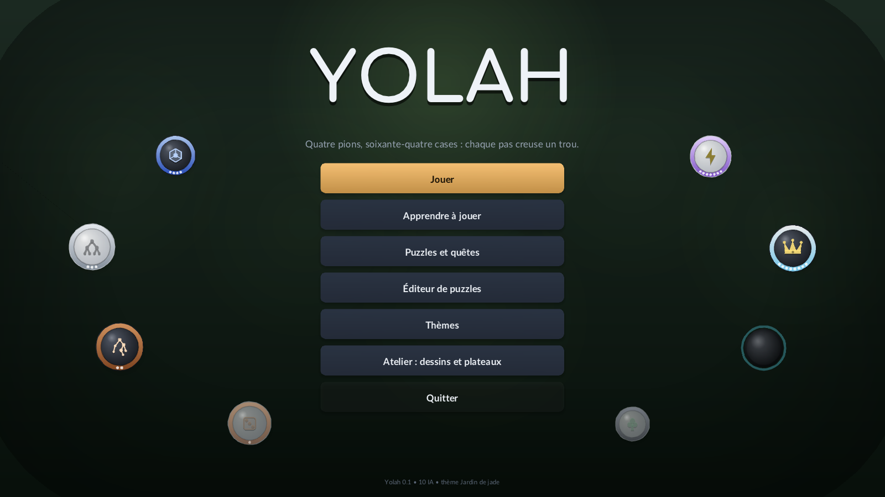
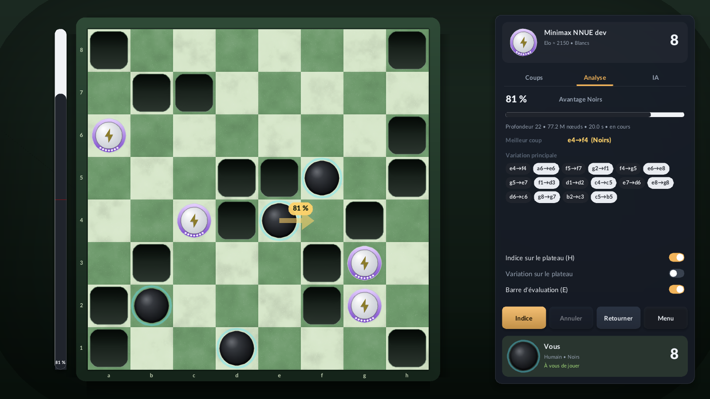
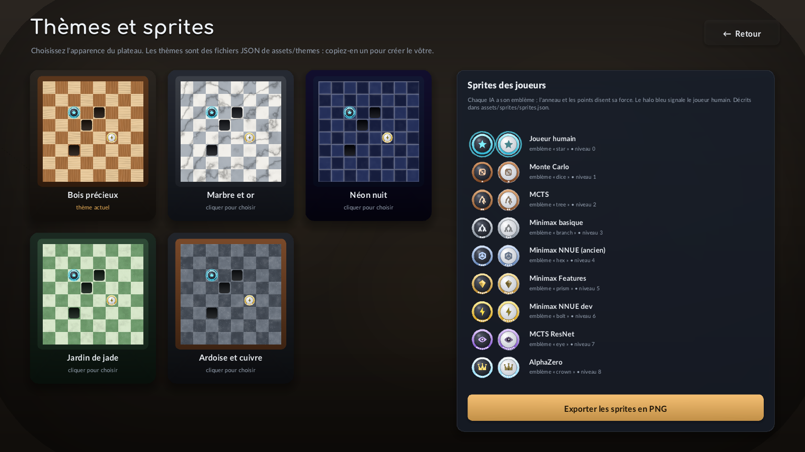
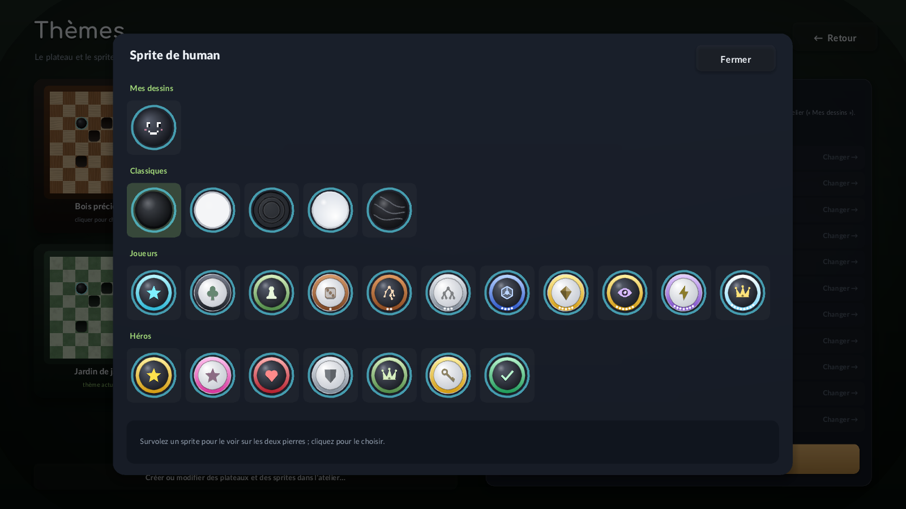
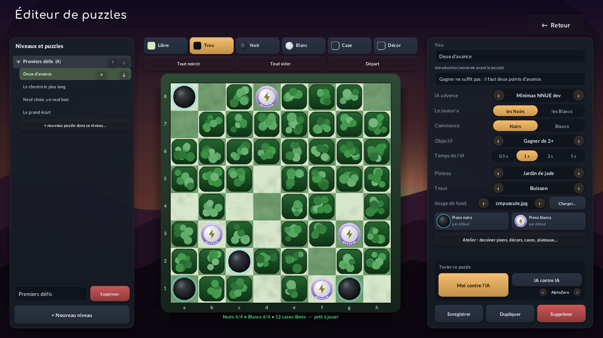
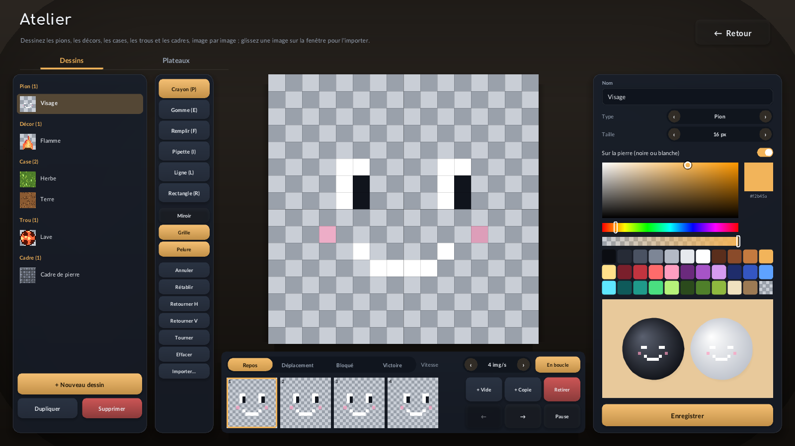
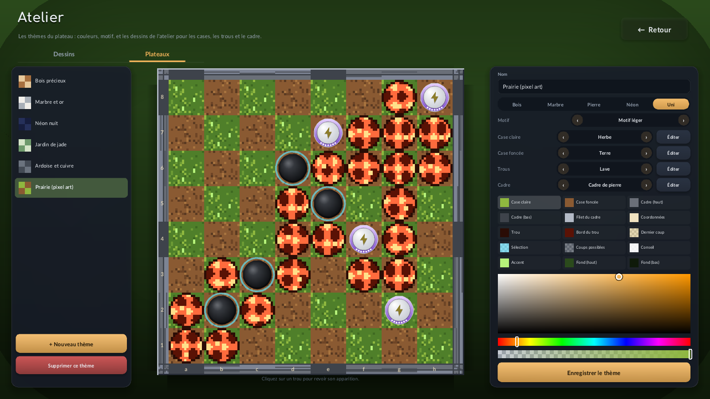

The Yolah application, and SDL3 from scratch
How the graphical application works, line by line where it matters: what SDL3 gives and how each of its calls is used, how shapes, text and pixel art reach the screen, how the interface is written without widget objects, how the AIs think without freezing the window, and where every file and setting lives.
1Build and run
The application lives in app/. It needs SDL3 and the engine of the repository, nothing else: images and fonts are read by three single-header libraries kept in app/third_party/. SDL3 is installed in ~/opt/SDL3; on a machine without it, CMake downloads and compiles it (a minute or two).
cmake -S app -B app/build -G Ninja -DCMAKE_BUILD_TYPE=Release
cmake --build app/build -j # or: cd app/build && ninja
./app/build/yolah_app
# libtorch (ResNet players on the GPU) is used when CMake finds it (CMAKE_PREFIX_PATH or ~/env's torch);
# without it the build goes on and these players run on the CPU. To never use it:
cmake -S app -B app/build -DYOLAH_APP_TORCH=OFFapp/build is a Ninja project: rebuild with ninja in that folder (or cmake --build app/build). make there answers “no makefile found”, and an old binary keeps running.
| Path | Content |
|---|---|
app/yolah_app.cpp | the whole application, about 6 300 lines in tagged sections |
app/CMakeLists.txt | SDL3 (installed or downloaded), the engine and the AI players as a static library, the executable, optional libtorch |
app/third_party/ | stb_image.h (read PNG/JPEG), stb_image_write.h (write PNG), stb_truetype.h (fonts): public domain |
app/assets/fonts/ | Lato (interface) and Comfortaa (titles), OFL licence |
app/assets/ai_roster.json | the AIs offered, weakest first, and the analysis engine |
app/assets/themes/*.json | one board theme per file |
app/assets/sprites/ | sprites.json (the library of piece looks), assignments.json (the sprite of each player) |
app/assets/art/ | pixel-art drawings of the workshop: <id>.json + <id>.png |
app/assets/puzzles/, levels/ | one puzzle per file; a level lists puzzles; levels/order.json orders the levels |
app/assets/backgrounds/ | images behind the puzzles |
~/.local/share/Yolah/YolahApp/settings.json | the user's settings and progress (SDL_GetPrefPath) |
Inside the source, every section starts with a tag: search for @@AI, @@DRAW… to jump there. The table of contents at the top of the file lists them, and section 14 shows how they depend on each other.
Keyboard in a game: H hint, E evaluation bar, U or Backspace undo, F flip the board, Space pause (two AIs), Esc back. In the editor, 1–6 pick a brush; in the workshop, Ctrl+Z/Y/S undo, redo, save.
2A tour of the application







3What SDL is
SDL (Simple DirectMedia Layer) is a C library that gives a program the few things every game needs from the operating system: a window, a way to draw into it, the events of the mouse and the keyboard, a clock, and small services (files, dialogs, cursors). It hides the differences between Linux (X11, Wayland), Windows and macOS, and between the graphics APIs (OpenGL, Vulkan, Direct3D, Metal): the same calls work everywhere.
SDL does not draw text, read PNG files, lay out buttons or play animations: it is deliberately small. Everything above the boxes of this figure is in yolah_app.cpp, with three helper headers (stb) for fonts and images. That is why the file is long, and also why every pixel on screen can be explained by code you can read.
An SDL function returns true on success in SDL3 (SDL2 returned 0), and SDL_GetError() gives the reason of the last failure. Objects are opaque pointers (SDL_Window*, SDL_Texture*) created by SDL_Create… and freed by SDL_Destroy…. Geometry uses floats: SDL_FRect{x, y, w, h}, SDL_FPoint, SDL_FColor (components in 0–1).
4SDL owns the loop
A classic program writes main() with a loop: read the events, update, draw, repeat. SDL3 offers a better structure, used here: the program defines four functions and SDL calls them. It is enabled by one macro, defined before the SDL headers:
// ─── @@INCLUDES ─────────────────────────────────────────────────────────────
// SDL_MAIN_USE_CALLBACKS: instead of writing main() and a loop, the program
// gives SDL four functions (see @@MAIN); SDL owns the loop. This is the
// recommended structure in SDL3 and works the same on every platform.
#define SDL_MAIN_USE_CALLBACKS 1SDL_main.h then provides the real main(); it runs the loop and calls:
SDL_AppEvent, then calls SDL_AppIterate. As long as every call returns SDL_APP_CONTINUE it goes on.Each function receives appstate, a pointer that belongs to the program: SDL_AppInit creates the App object (all the state of the application, section 14) and stores it there; the others cast it back. Nothing is global except a few caches.
SDL_AppResult SDL_AppInit(void** appstate, int argc, char* argv[]) {
App* a = new App();
*appstate = a; // SDL gives it back to the three others
... // window, renderer, fonts, files
return SDL_APP_CONTINUE; // SDL_APP_FAILURE: quit with an error
}
SDL_AppResult SDL_AppEvent(void* appstate, SDL_Event* e) {
App* a = static_cast<App*>(appstate);
if (e->type == SDL_EVENT_QUIT) return SDL_APP_SUCCESS; // the window's close button
... // remember the mouse and the keys (section 7)
return SDL_APP_CONTINUE;
}
SDL_AppResult SDL_AppIterate(void* appstate) { ... } // one frame (section 6)
void SDL_AppQuit(void* appstate, SDL_AppResult result) { delete static_cast<App*>(appstate); }Why this is better than a hand-written loop: on some platforms (the web, phones) the program may not block in a loop of its own; with callbacks the same code runs everywhere. It also makes the structure obvious: events only record what happened, the frame decides what to do with it.
5Window, renderer, pixels
SDL_AppInit starts SDL's video part, then creates the window and its renderer in one call:
if (!SDL_Init(SDL_INIT_VIDEO)) { // video + events; audio is not used
SDL_Log("SDL_Init: %s", SDL_GetError());
return SDL_APP_FAILURE;
}
if (!SDL_CreateWindowAndRenderer("Yolah", a->w, a->h,
SDL_WINDOW_RESIZABLE | SDL_WINDOW_HIGH_PIXEL_DENSITY, &a->window, &a->renderer)) {
SDL_Log("SDL_CreateWindowAndRenderer: %s", SDL_GetError());
return SDL_APP_FAILURE;
}
SDL_SetWindowMinimumSize(a->window, 1024, 600);
SDL_SetRenderVSync(a->renderer, 1); // wait for the screen: no tearing, no wasted CPU
SDL_SetRenderDrawBlendMode(a->renderer, SDL_BLENDMODE_BLEND); // colours with alpha are transparent
draw::R = a->renderer; // the drawing functions use it (section 16)| Object | What it is |
|---|---|
SDL_Window | the rectangle on the desktop: title, size, resizing, fullscreen, the mouse cursor over it |
SDL_Renderer | SDL's 2D drawing engine for that window: fills rectangles, draws triangles and images (textures) into a hidden image, then shows it. It runs on the GPU (OpenGL, Vulkan…) or in software |
SDL_Texture | an image owned by the renderer, usually in GPU memory (section 10) |
5.1Window units and pixels
With SDL_WINDOW_HIGH_PIXEL_DENSITY, a window on a high-density screen gets more pixels than its size in “window units”: a window of 1600 × 900 units on a 200 % screen has 3200 × 1800 pixels. The application draws in pixels (sharp everywhere) and asks every frame how many it has:
SDL_GetRenderOutputSize(a->renderer, &a->w, &a->h); // pixels of the drawing surface (follows resizes)
a->s = std::min(a->w / DESIGN_W, a->h / DESIGN_H); // DESIGN_W × DESIGN_H = 1600 × 900a.s. A button written {x, y, 200 * s, 50 * s} is 200 × 50 at 1600 × 900, 400 × 100 on a 4K screen.Mouse events arrive in window units; one call converts them to pixels so that the mouse and the drawing use the same unit (section 7). Textures whose content depends on their size (the board's squares, the glyphs) are generated for the real pixel size and cached per size, so they stay sharp after a resize.
6One frame
The renderer draws into a hidden image, the back buffer. Nothing appears until SDL_RenderPresent, which shows that image and gives a fresh one for the next frame. With vertical synchronisation on, SDL_RenderPresent waits for the screen's refresh: the loop runs at the screen's rate (60 Hz, 144 Hz…) without burning the CPU.
Here is the real frame function. Read it once from top to bottom: the rest of this document explains each line.
SDL_AppResult SDL_AppIterate(void* appstate) {
App* a = static_cast<App*>(appstate);
double t = now_seconds();
a->dt = std::min(0.1, t - a->time);
a->time = t;
SDL_GetRenderOutputSize(a->renderer, &a->w, &a->h);
a->s = std::min(a->w / DESIGN_W, a->h / DESIGN_H);
a->ui.s = a->s;
a->ui.dt = float(a->dt);
a->ui.hovering = false;
g_graveyard.reap();
a->in.files = a->take_files();
// A scene that returned between draw::clip(&box) and draw::clip(nullptr)
// (a click that changes scene) must not crop the next frame.
SDL_SetRenderClipRect(a->renderer, nullptr);
SDL_SetRenderDrawColor(a->renderer, 0, 0, 0, 255);
SDL_RenderClear(a->renderer);
switch (a->scene) {
case Scene::Menu: scene_menu(*a); break;
case Scene::Setup: scene_setup(*a); break;
case Scene::Game: scene_game(*a); break;
case Scene::Themes: scene_themes(*a); break;
case Scene::Tutorial: scene_tutorial(*a); break;
case Scene::Puzzles: scene_puzzles(*a); break;
case Scene::Editor: scene_editor(*a); break;
case Scene::Studio: scene_studio(*a); break;
}
if (a->scene != Scene::Game) {
a->fx.update(float(a->dt));
a->fx.draw(a->text);
}
// A message on the board (a side that must pass) goes as soon as the game is
// over: the scores take its place.
if (a->toast_at.x >= 0 && ((a->scene == Scene::Game && a->game.match.over())
|| (a->scene == Scene::Tutorial && a->tuto.match.over())))
a->toast.clear();
// Toast message at the bottom.
float tk = float(a->time - a->toast_t);
if (tk < 4.0f && !a->toast.empty()) {
float al = clamp01(std::min(tk * 5, (4.0f - tk) * 2));
float s = a->s, fs = a->toast_size * s;
float w = a->text.width(Font::Bold, fs, a->toast) + 2.8f * fs, h = 2.7f * fs;
V2 c = a->toast_at.x >= 0 ? a->toast_at : V2{a->w * 0.5f, a->h - 67 * s};
Box b{c.x - w / 2, c.y - h / 2 + (1 - al) * 20 * s, w, h};
draw::shadow({b.x, b.y + 6 * s, b.w, b.h}, h / 2, 20 * s, hex(0x000000, uint8_t(120 * al)));
draw::round_box(b, h / 2, with_alpha(hex(0x10151d), 0.95f * al));
draw::round_frame(b, h / 2, 1, with_alpha(pal::accent, 0.6f * al));
a->text.draw(Font::Bold, fs, a->toast, {b.center().x, b.center().y - a->text.line_height(Font::Bold, fs) * 0.45f}, with_alpha(pal::text, al), Align::Center);
}
// Fade-in after a scene change.
float fade = 1 - clamp01(float(a->time - a->scene_t0) / 0.25f);
if (fade > 0) draw::rect({0, 0, float(a->w), float(a->h)}, hex(0x000000, uint8_t(255 * fade)));
SDL_SetCursor(a->ui.hovering ? a->cursor_hand : a->cursor_arrow);
// Typed text only arrives while text input is on: on while a field has the focus.
if (!a->ui.focus.empty() != SDL_TextInputActive(a->window)) {
if (!a->ui.focus.empty()) SDL_StartTextInput(a->window);
else SDL_StopTextInput(a->window);
}
if (a->frames_left >= 0) {
if (a->frames_left-- == 0) {
SDL_Surface* surf = SDL_RenderReadPixels(a->renderer, nullptr);
if (surf) {
SDL_SaveBMP(surf, a->screenshot.c_str());
SDL_DestroySurface(surf);
}
return SDL_APP_SUCCESS;
}
}
SDL_RenderPresent(a->renderer);
a->in.pressed = a->in.released = a->in.rpressed = false;
a->in.wheel = 0;
a->in.files.clear();
a->in.keys.clear();
a->in.text.clear();
a->in.backspaces = 0;
return SDL_APP_CONTINUE;
}- Time, not frames.
a->time(seconds since start, fromSDL_GetTicksNS) anda->dt(seconds since the previous frame, capped at 0.1) drive every animation, so an animation lasts the same time on a 60 Hz and a 144 Hz screen. - The scene is a plain function chosen by a
switch: one per screen (section 24). - Overlays come last: effects, the toast message, the fade after a scene change (a black rectangle whose opacity goes from 1 to 0 in 0.25 s).
- Screenshot mode: with
--screenshot, the frame is read back withSDL_RenderReadPixelsand saved as BMP instead of shown (section 26). - “This frame” input is cleared after the frame: a click is seen by exactly one frame.
7Events and input
The system queues what the user does; SDL turns each item into an SDL_Event, a C union whose type says which member is valid (e->motion, e->button, e->key, e->wheel, e->drop, e->text). The application does not act in the event function: it only records what happened in an Input structure, which the frame reads.
SDL_AppResult SDL_AppEvent(void* appstate, SDL_Event* e) {
App* a = static_cast<App*>(appstate);
// Mouse coordinates in rendering pixels (they differ from window
// coordinates on high-density screens).
SDL_ConvertEventToRenderCoordinates(a->renderer, e);
switch (e->type) {
case SDL_EVENT_QUIT: return SDL_APP_SUCCESS;
case SDL_EVENT_MOUSE_MOTION: a->in.mouse = {e->motion.x, e->motion.y}; break;
case SDL_EVENT_MOUSE_BUTTON_DOWN:
if (e->button.button == SDL_BUTTON_LEFT) { a->in.down = true; a->in.pressed = true; a->in.mouse = {e->button.x, e->button.y}; }
if (e->button.button == SDL_BUTTON_RIGHT) { a->in.rdown = true; a->in.rpressed = true; a->in.mouse = {e->button.x, e->button.y}; }
break;
case SDL_EVENT_MOUSE_BUTTON_UP:
if (e->button.button == SDL_BUTTON_LEFT) { a->in.down = false; a->in.released = true; a->in.mouse = {e->button.x, e->button.y}; }
if (e->button.button == SDL_BUTTON_RIGHT) a->in.rdown = false;
break;
// A file dropped on the window (SDL sends one event per file).
case SDL_EVENT_DROP_FILE:
if (e->drop.data) a->push_file("drop", e->drop.data);
break;
case SDL_EVENT_MOUSE_WHEEL: a->in.wheel += e->wheel.y; break;
case SDL_EVENT_KEY_DOWN:
if (!e->key.repeat) a->in.keys.push_back(e->key.key);
if (e->key.key == SDLK_BACKSPACE) a->in.backspaces++;
break;
case SDL_EVENT_TEXT_INPUT: a->in.text += e->text.text; break;
default: break;
}
return SDL_APP_CONTINUE;
}// ─── @@UI ───────────────────────────────────────────────────────────────────
// Immediate-mode widgets: there is no widget object; every frame, the scene
// calls ui.button(...) where the button must be, and the call both draws it and
// tells whether it was clicked. The only memory is a small per-id animation
// value (hover, press), kept in a map.
struct Input {
V2 mouse{-1, -1};
bool down = false; // left button held
bool pressed = false; // went down this frame
bool released = false; // went up this frame
bool rdown = false, rpressed = false; // right button: held, went down this frame
float wheel = 0;
// Files given this frame: dropped on the window ("drop") or chosen in a
// file dialog (the purpose given to App::choose_file).
std::vector<std::pair<std::string, std::string>> files; // (purpose, path)
std::vector<SDL_Keycode> keys; // keys pressed this frame
std::string text; // characters typed this frame (UTF-8, SDL_EVENT_TEXT_INPUT)
int backspaces = 0; // Backspace presses this frame, key repeats included
bool key(SDL_Keycode k) const { return std::find(keys.begin(), keys.end(), k) != keys.end(); }
void eat(SDL_Keycode k) { keys.erase(std::remove(keys.begin(), keys.end(), k), keys.end()); }
};The difference between down and pressed matters. down is a state: the button is held now. pressed and released are edges: they are true during one frame only, the frame after the event, and the frame function resets them at its end.
released is true while the mouse is over it, which is how desktop buttons behave: pressing, moving away and releasing elsewhere cancels.7.1Coordinates
SDL_ConvertEventToRenderCoordinates(renderer, e) rewrites the coordinates inside the event, from window units to the renderer's pixels. It is the first line of SDL_AppEvent: after it, in.mouse and every Box of the drawing code are in the same unit, and box.contains(in.mouse) is the whole hit test.
7.2Keys and typed text
Two different events exist for the keyboard. SDL_EVENT_KEY_DOWN gives a key code (SDLK_ESCAPE, SDLK_H…), for shortcuts; e->key.repeat is true for the automatic repeats of a held key, ignored except for Backspace. SDL_EVENT_TEXT_INPUT gives the characters typed, in UTF-8, after the keyboard layout and the dead keys (é, ç, ê): this is what a text field needs. SDL only sends text events between SDL_StartTextInput and SDL_StopTextInput (on some systems this opens the on-screen keyboard), so the frame turns text input on exactly while a text field has the focus:
// Typed text only arrives while text input is on: on while a field has the focus.
if (!a->ui.focus.empty() != SDL_TextInputActive(a->window)) {
if (!a->ui.focus.empty()) SDL_StartTextInput(a->window);
else SDL_StopTextInput(a->window);
}Modifier keys are read when needed with SDL_GetModState() (the workshop's Ctrl+Z): mods & SDL_KMOD_CTRL.
8Colours and blending
A colour has four components: red, green, blue and alpha (opacity), each 0–255 in SDL_Color or 0–1 in SDL_FColor. The application keeps its own small type, Rgba, written in hexadecimal like in CSS, and converts at the last moment:
struct Rgba {
uint8_t r = 0, g = 0, b = 0, a = 255;
};constexpr Rgba hex(uint32_t rgb, uint8_t a = 255) {
return {uint8_t(rgb >> 16), uint8_t(rgb >> 8), uint8_t(rgb), a};
}inline SDL_FColor fcolor(Rgba c) { return {c.r / 255.0f, c.g / 255.0f, c.b / 255.0f, c.a / 255.0f}; }With SDL_SetRenderDrawBlendMode(renderer, SDL_BLENDMODE_BLEND), a colour with alpha a drawn over a pixel mixes with it:
Three helpers do all the colour arithmetic of the interface: mix(a, b, t) interpolates two colours, shade(c, k) moves a colour towards white (k > 0) or black (k < 0), and with_alpha(c, k) multiplies the opacity, which is how a whole widget fades in: every colour it uses goes through with_alpha(…, k) with k growing from 0 to 1.
inline Rgba mix(Rgba a, Rgba b, float t) {
t = clamp01(t);
return {uint8_t(lerpf(a.r, b.r, t) + 0.5f), uint8_t(lerpf(a.g, b.g, t) + 0.5f),
uint8_t(lerpf(a.b, b.b, t) + 0.5f), uint8_t(lerpf(a.a, b.a, t) + 0.5f)};
}9Triangles: SDL_RenderGeometry
The SDL renderer has few drawing calls: SDL_RenderFillRect (a rectangle), SDL_RenderLine (one-pixel lines), SDL_RenderTexture (an image) and SDL_RenderGeometry. The last one is the most powerful: it draws a list of triangles whose corners (vertices) each carry a position and a colour. The GPU fills each triangle and interpolates the colours between its corners.
An SDL_Vertex has a position (SDL_FPoint), a colour (SDL_FColor) and texture coordinates (unused here: the texture argument is nullptr). The index list says which vertices form each triangle, so a vertex shared by several triangles is stored once. The colour picker's square is the shortest real example:
// A quad with one colour per corner (SDL_RenderGeometry interpolates them).
void quad(Box b, Rgba tl, Rgba tr, Rgba br, Rgba bl) {
SDL_Vertex v[4] = {{{b.x, b.y}, fcolor(tl), {0, 0}}, {{b.right(), b.y}, fcolor(tr), {0, 0}},
{{b.right(), b.bottom()}, fcolor(br), {0, 0}}, {{b.x, b.bottom()}, fcolor(bl), {0, 0}}};
int idx[6] = {0, 1, 2, 0, 2, 3};
SDL_RenderGeometry(draw::R, nullptr, v, 4, idx, 6);
}9.1Round shapes and soft edges
A rounded box, a circle or a star is a fan: a centre vertex and a closed outline, one triangle per outline segment. The edge of such a shape is a staircase of pixels. The trick that makes it smooth (anti-aliasing) is a fringe: every outline vertex is copied one pixel further out with alpha 0, and a ring of thin triangles joins the two outlines. The GPU interpolates the alpha across one pixel, and the edge fades instead of stepping. With a fringe of 30 pixels instead of 1, the same function draws a soft shadow.
void fan(V2 c, Rgba cc, const std::vector<V2>& ring, const std::vector<Rgba>& cols, float feather = 1.0f) {
const int n = int(ring.size());
if (n < 3) return;
std::vector<SDL_Vertex> v;
std::vector<int> idx;
v.reserve(2 * n + 1);
idx.reserve(9 * n);
v.push_back({{c.x, c.y}, fcolor(cc), {0, 0}});
for (int i = 0; i < n; i++) v.push_back({{ring[i].x, ring[i].y}, fcolor(cols[i]), {0, 0}});
for (int i = 0; i < n; i++) {
idx.push_back(0);
idx.push_back(1 + i);
idx.push_back(1 + (i + 1) % n);
}
if (feather > 0) {
// Outward normal of each outline vertex (mean of its two edges).
for (int i = 0; i < n; i++) {
V2 a = ring[(i + n - 1) % n], b = ring[i], d = ring[(i + 1) % n];
V2 n1 = normalized(perp(b - a)), n2 = normalized(perp(d - b));
V2 nm = normalized(n1 + n2);
if (dot(nm, b - c) < 0) nm = nm * -1.0f;
V2 o = b + nm * feather;
Rgba t = cols[i];
t.a = 0;
v.push_back({{o.x, o.y}, fcolor(t), {0, 0}});
}
for (int i = 0; i < n; i++) {
int a = 1 + i, b = 1 + (i + 1) % n, ao = 1 + n + i, bo = 1 + n + (i + 1) % n;
idx.insert(idx.end(), {a, b, bo, a, bo, ao});
}
}
SDL_RenderGeometry(R, nullptr, v.data(), int(v.size()), idx.data(), int(idx.size()));
}Read it as three steps: the vertices (centre, then outline), the triangles of the fan (0, 1+i, 1+(i+1)), then, if feather > 0, the outer copies and two triangles per segment between the outline and its copy. Section 16 lists the shapes built on it.
10Textures
A texture is an image that the renderer can draw quickly, usually stored in GPU memory. The application creates textures for the glyphs of each font size, the board's squares, the PNG sprites, the background images and the pixel-art drawings. The life of a texture:
SDL_Texture* tex = SDL_CreateTexture(renderer, SDL_PIXELFORMAT_ABGR8888, // byte order of the pixels
SDL_TEXTUREACCESS_STATIC, w, h); // filled once
SDL_UpdateTexture(tex, nullptr, pixels, w * 4); // copy w × h pixels; the last argument: bytes per row
SDL_SetTextureBlendMode(tex, SDL_BLENDMODE_BLEND); // its alpha makes it transparent
SDL_SetTextureScaleMode(tex, SDL_SCALEMODE_LINEAR); // smooth when scaled (NEAREST: pixel art)
SDL_FRect src{0, 0, 32, 32}; // a part of the texture (nullptr: all of it)
SDL_FRect dst{x, y, 128, 128}; // where on screen, at which size
SDL_RenderTexture(renderer, tex, &src, &dst);
SDL_DestroyTexture(tex); // when no longer needed10.1Pixel formats: the byte order trap
A pixel is 4 bytes, but which byte is red? SDL names formats by the order of the components in a 32-bit number, and on a little-endian PC the bytes in memory come in the reverse order. stb_image returns bytes R, G, B, A in memory, which is SDL_PIXELFORMAT_ABGR8888; the code that builds pixels as numbers (0xAARRGGBB) uses SDL_PIXELFORMAT_ARGB8888.
| Where | Pixels built as | Format |
|---|---|---|
images read by stb_image, pixel art (Pixel = 0xAABBGGRR) | bytes R, G, B, A | SDL_PIXELFORMAT_ABGR8888 |
| board squares, glyph atlases | uint32_t = 0xAARRGGBB | SDL_PIXELFORMAT_ARGB8888 |
Pick the wrong one and red and blue swap: a blue sky turns orange. The pixel-art code packs its own pixels in stb's order so that loading, editing and saving never convert:
inline Pixel pack(Rgba c) { return Pixel(c.r) | Pixel(c.g) << 8 | Pixel(c.b) << 16 | Pixel(c.a) << 24; }10.2Access modes
| Access | Use | In the application |
|---|---|---|
SDL_TEXTUREACCESS_STATIC | filled with SDL_UpdateTexture, rarely changed | glyphs, board squares, images, drawings (rebuilt when a drawing changes) |
SDL_TEXTUREACCESS_STREAMING | changed every frame (SDL_LockTexture) | not used |
SDL_TEXTUREACCESS_TARGET | the renderer can draw into it | the PNG export of the sprites (section 11) |
10.3Scaling: linear or nearest
When a texture is drawn bigger or smaller than its size, each screen pixel must take a colour from the texture. SDL_SCALEMODE_LINEAR blends the four nearest texels: right for photos, fonts and the procedural board. SDL_SCALEMODE_NEAREST takes the single nearest one: each texel becomes a crisp square, which is what pixel art needs.
SDL_SetTextureScaleMode(tex, SDL_SCALEMODE_NEAREST) is one line, and it is the whole difference between a sharp and a blurred pixel-art piece.10.4Tinting, fading, rotating
SDL_SetTextureColorMod(tex, r, g, b)multiplies every texel by a colour: the glyph atlas is white, and each string is drawn in its colour this way.SDL_SetTextureAlphaModFloat(tex, k)multiplies the opacity: the onion skin of the workshop (the previous frame at 30 %), fading pieces.SDL_RenderTextureRotated(renderer, tex, src, dst, angle, centre, flip): the flipped board (180°), drawings mirrored horizontally (SDL_FLIP_HORIZONTAL).
10.5Nine pieces: SDL_RenderTexture9Grid
A frame around the board must stretch to any size without distorting its corners. SDL_RenderTexture9Grid cuts the source in 3 × 3: the four corners are drawn at a fixed scale, the four edges stretch along one direction, the centre stretches in both.
border pixels thick on screen.// A board frame: the drawing cut in 3 × 3 (SDL_RenderTexture9Grid): the
// corners keep their shape, the edges stretch along the frame, the centre
// (under the board) fills the rest; `border` is the frame's thickness on screen.
void draw_art_frame(Art& art, double t, Box b, float border) {
auto src = art.frame_rect("idle", t);
if (!src) return;
float third = art.size / 3.0f;
SDL_FRect dst = b.frect();
SDL_SetTextureAlphaModFloat(art.tex, 1);
SDL_RenderTexture9Grid(draw::R, art.tex, &*src, third, third, third, third, border / third, &dst);
}11Clipping and render targets
11.1The clip rectangle
SDL_SetRenderClipRect(renderer, &rect) restricts all drawing to a rectangle until it is reset with nullptr. Scrolling lists use it: the content is drawn at its scrolled position and whatever falls outside the list's box is simply not drawn.
draw::clip(const Box*).The clip is state, not a scope. The puzzles grid set it, and a click on a puzzle returned from the scene function before draw::clip(nullptr). The clip stayed set: the next scene (a puzzle's introduction) was cut to the grid's rectangle, and black bands surrounded its picture. SDL_RenderClear ignores the clip, so the bands were the cleared black. Two fixes: reset before returning, and reset at the start of every frame, so that no scene can leak it into another:
// A scene that returned between draw::clip(&box) and draw::clip(nullptr)
// (a click that changes scene) must not crop the next frame.
SDL_SetRenderClipRect(a->renderer, nullptr);
SDL_SetRenderDrawColor(a->renderer, 0, 0, 0, 255);
SDL_RenderClear(a->renderer);The same reasoning applies to every piece of renderer state: draw colour, render target, a texture's colour and alpha modulation. The code sets what it needs right before drawing instead of assuming what was left.
11.2Drawing into a texture
A texture created with SDL_TEXTUREACCESS_TARGET can receive drawing: SDL_SetRenderTarget(renderer, tex) redirects every call to it, and SDL_SetRenderTarget(renderer, nullptr) goes back to the window. SDL_RenderReadPixels then copies the result to memory as an SDL_Surface (an image in RAM). The button “Exporter les sprites en PNG” uses this to save every sprite on both stones:
// ─── @@SCENE_THEMES ─────────────────────────────────────────────────────────
// Renders every sprite (both colours) into a 256 × 256 texture and saves it as
// a PNG in assets/sprites/export/: a starting point to draw one's own sprites
// ("image" in sprites.json).
std::string export_sprites(App& a) {
fs::path dir = g_paths.assets / "sprites" / "export";
std::error_code ec;
fs::create_directories(dir, ec);
const int N = 256;
int count = 0;
SDL_Texture* target = SDL_CreateTexture(a.renderer, SDL_PIXELFORMAT_ARGB8888, SDL_TEXTUREACCESS_TARGET, N, N);
if (!target) return std::string("export impossible : ") + SDL_GetError();
SDL_SetTextureBlendMode(target, SDL_BLENDMODE_BLEND);
for (const SpriteDef& sp : a.sprites) {
for (int side : {BLACK, WHITE}) {
SDL_SetRenderTarget(a.renderer, target);
SDL_SetRenderDrawColor(a.renderer, 0, 0, 0, 0);
SDL_RenderClear(a.renderer);
SpriteDef plain = sp;
plain.texture = nullptr;
draw_piece(plain, side, {N / 2.0f, N / 2.0f}, N * 0.36f, 0, 0);
SDL_Surface* surf = SDL_RenderReadPixels(a.renderer, nullptr);
SDL_SetRenderTarget(a.renderer, nullptr);
if (!surf) continue;
SDL_Surface* rgba = SDL_ConvertSurface(surf, SDL_PIXELFORMAT_ABGR8888);
SDL_DestroySurface(surf);
if (!rgba) continue;
// The blending stored premultiplied colours: undo it.
auto* px = static_cast<uint8_t*>(rgba->pixels);
for (int y = 0; y < rgba->h; y++)
for (int x = 0; x < rgba->w; x++) {
uint8_t* p = px + y * rgba->pitch + x * 4;
if (p[3] > 0 && p[3] < 255)
for (int k = 0; k < 3; k++) p[k] = uint8_t(std::min(255, p[k] * 255 / p[3]));
}
fs::path file = dir / (sp.id + (side == BLACK ? "_noir.png" : "_blanc.png"));
if (stbi_write_png(file.string().c_str(), rgba->w, rgba->h, 4, rgba->pixels, rgba->pitch)) count++;
SDL_DestroySurface(rgba);
}
}
SDL_DestroyTexture(target);
return strf("%d images export\xC3\xA9" "es dans %s", count, dir.string().c_str());
}Blending into a transparent target stores colours already multiplied by their alpha (a half-transparent white is stored as grey with alpha 128). A PNG expects straight colours, so the loop divides by alpha before saving; without it, every soft edge of the exported images would look dark.
The screenshot mode reads the window's own back buffer the same way (SDL_RenderReadPixels(renderer, nullptr), then SDL_SaveBMP).
12Text
SDL3 cannot draw text (a companion library, SDL_ttf, exists but is not used). The application reads the .ttf fonts with stb_truetype.h. For each font and each pixel size it meets, it draws every character it may need, once, into one texture called an atlas, and remembers where each character is. Drawing a string is then one SDL_RenderTexture per character, from its rectangle in the atlas to its place on screen.
// Draws `s` with its top-left (Align::Left) / top-centre / top-right at p;
// returns the width.
float draw(Font f, float size, const std::string& s, V2 p, Rgba col, Align al = Align::Left) {
Atlas& a = atlas(f, size);
float w = width(f, size, s);
float x = p.x - (al == Align::Center ? w * 0.5f : al == Align::Right ? w : 0.0f);
float y = p.y + a.ascent;
SDL_SetTextureColorMod(a.tex, col.r, col.g, col.b);
SDL_SetTextureAlphaMod(a.tex, col.a);
for (size_t i = 0; i < s.size();) {
uint32_t cp = next_codepoint(s, i);
auto it = a.index.find(cp);
if (it == a.index.end()) it = a.index.find('?');
stbtt_aligned_quad q;
float xx = x, yy = y;
stbtt_GetPackedQuad(a.chars.data(), a.w, a.h, it->second, &xx, &yy, &q, 0);
SDL_FRect src{q.s0 * a.w, q.t0 * a.h, (q.s1 - q.s0) * a.w, (q.t1 - q.t0) * a.h};
SDL_FRect dst{q.x0, q.y0, q.x1 - q.x0, q.y1 - q.y0};
if (dst.w > 0) SDL_RenderTexture(draw::R, a.tex, &src, &dst);
x = xx;
}
return w;
}Details worth knowing:
- UTF-8. Strings are UTF-8;
next_codepointdecodes one character (1 to 4 bytes) at a time. In the source, accented letters are written as bytes so that the file stays ASCII:"\xC3\xA9"is é,"\xE2\x86\x92"is →. - Missing characters show as “?”. To add one, append its code point to the list in
TextEngine::load, if the font has it (Lato has no ⇄ or ▶). - Sharp small text. Sizes up to 36 px are packed with 2× horizontal oversampling (
stbtt_PackSetOversampling): glyphs are positioned to half a pixel. - White glyphs. The atlas stores white pixels whose alpha is the coverage of the glyph; colour modulation turns them into any colour without a new atlas.
- Layout helpers.
widthmeasures,wrapbreaks a paragraph into lines that fit a width (on spaces, and on\n),paragraphdraws the lines left-aligned or centred.
Atlas& atlas(Font f, float size) {
Face& face = faces_[int(f)];
int px = std::max(6, int(std::round(size)));
auto it = face.atlases.find(px);
if (it != face.atlases.end()) return it->second;
Atlas& a = face.atlases[px];
const int over = px <= 36 ? 2 : 1; // horizontal oversampling: sharper small text
a.w = px <= 20 ? 512 : px <= 44 ? 1024 : px <= 100 ? 2048 : 4096;
a.h = a.w;
std::vector<unsigned char> alpha(size_t(a.w) * a.h);
a.chars.resize(codepoints_.size());
stbtt_pack_context pc;
stbtt_PackBegin(&pc, alpha.data(), a.w, a.h, 0, 2, nullptr);
stbtt_PackSetOversampling(&pc, over, 1);
stbtt_pack_range range{};
range.font_size = float(px);
range.array_of_unicode_codepoints = codepoints_.data();
range.num_chars = int(codepoints_.size());
range.chardata_for_range = a.chars.data();
stbtt_PackFontRanges(&pc, face.data.data(), 0, &range, 1);
stbtt_PackEnd(&pc);
for (size_t i = 0; i < codepoints_.size(); i++) a.index[uint32_t(codepoints_[i])] = int(i);
int asc, desc, gap;
stbtt_GetFontVMetrics(&face.info, &asc, &desc, &gap);
float scale = stbtt_ScaleForPixelHeight(&face.info, float(px));
a.ascent = asc * scale;
a.descent = desc * scale;
a.gap = gap * scale;
// White pixels whose alpha is the glyph coverage, tinted when drawn.
std::vector<uint32_t> rgba(alpha.size());
for (size_t i = 0; i < alpha.size(); i++) rgba[i] = 0x00ffffffu | (uint32_t(alpha[i]) << 24);
a.tex = SDL_CreateTexture(draw::R, SDL_PIXELFORMAT_ARGB8888, SDL_TEXTUREACCESS_STATIC, a.w, a.h);
SDL_UpdateTexture(a.tex, nullptr, rgba.data(), a.w * 4);
SDL_SetTextureBlendMode(a.tex, SDL_BLENDMODE_BLEND);
SDL_SetTextureScaleMode(a.tex, SDL_SCALEMODE_LINEAR);
return a;
}13Files, dialogs, threads and small services
| Call | Use in the application |
|---|---|
SDL_GetBasePath() | the executable's folder: assets/ is looked for there first, so a copied application finds its files |
SDL_GetPrefPath("Yolah", "YolahApp") | a per-user folder for settings.json (~/.local/share/Yolah/YolahApp/ on Linux); free the string with SDL_free |
SDL_GetTicksNS() | nanoseconds since SDL_Init: the clock of every animation (now_seconds()) |
SDL_CreateSystemCursor, SDL_SetCursor | the hand over anything clickable (ui.hovering), the arrow elsewhere |
SDL_SetHint(SDL_HINT_VIDEO_DRIVER, "offscreen") | no window at all, plus SDL_HINT_RENDER_DRIVER = "software": the screenshot mode |
SDL_ShowSimpleMessageBox | the fonts are missing: an error box before quitting |
SDL_Log | messages on the terminal (JSON errors, missing files) |
SDL_EVENT_DROP_FILE | a file dropped on the window: e->drop.data is its path |
SDL_ShowOpenFileDialog | the system's “open” dialog, for images |
13.1The file dialog: an answer from another thread
SDL_ShowOpenFileDialog returns at once; the user's choice arrives later through a callback, and SDL may call it from another thread. The frame must not be touched from there. The callback only pushes the path into a list protected by a mutex; the next frame takes the list and hands it to the scene as in.files, exactly like a dropped file.
void choose_image(const std::string& purpose) {
static const SDL_DialogFileFilter filters[] = {{"Images", "png;jpg;jpeg;bmp;gif;tga"}};
dialog_purpose = purpose;
SDL_ShowOpenFileDialog(
[](void* user, const char* const* list, int) {
App* a = static_cast<App*>(user);
if (!list) { a->push_file("dialog-error", SDL_GetError()); return; }
if (list[0]) a->push_file(a->dialog_purpose, list[0]);
},
this, window, filters, 1, nullptr, false);
}void push_file(const std::string& purpose, const std::string& path) {
std::lock_guard lock(files_mutex);
pending_files.push_back({purpose, path});
}std::vector<std::pair<std::string, std::string>> take_files() {
std::lock_guard lock(files_mutex);
return std::exchange(pending_files, {});
}On Linux the dialog needs a desktop portal or zenity; when none is there, the callback receives nullptr and the application reports the error and suggests dropping the file on the window instead.
13.2Threads in general
Only the main thread calls the renderer. Anything slow (an AI's search, the analysis) runs in a std::thread and communicates through atomics and mutex-protected snapshots that the frame reads (section 19). This keeps the window at 60 frames per second while an AI thinks for seconds.
14Architecture
One source file, on purpose: everything the application does can be found with a search, and there is no build system to learn beyond one CMake file. The file reads from the bottom up: small tools first, then the engine wrapper and the AIs, then the drawing layers, the widgets and the board, the application state, the scenes that use all of it, and at the very end the four functions SDL calls. A section only uses the sections above it (a few forward declarations aside).
14.1The App structure
App holds everything: the SDL objects, the size and scale of the window, the clock, the fonts, the input, the widgets' memory, the loaded themes, sprites and AIs, the user's settings, the current scene, and one nested structure per scene for the state that must survive from frame to frame (the game in progress, the tutorial's lesson, the editor's puzzle, the workshop's drawing).
struct App {
SDL_Window* window = nullptr;
SDL_Renderer* renderer = nullptr;
int w = 1600, h = 900;
float s = 1; // design → pixels
double time = 0, dt = 0;
std::mt19937 rng{12345};
TextEngine text;
Input in;
Ui ui{text, in};
BoardTextures board_textures;
FxLayer fx;
std::vector<Theme> themes;
std::vector<SpriteDef> sprites;
std::vector<PieceSet> piece_sets; // assets/sprites/sets.json
std::string debug_fx; // --fx style,power (screenshots): a square breaks at the board's centre
std::vector<AiSpec> roster;
Settings settings;
std::string setup_params; // the AI whose settings box is open (new-game screen)
Scene scene = Scene::Menu;
double scene_t0 = 0; // for the fade-in
SDL_Cursor* cursor_arrow = nullptr;
SDL_Cursor* cursor_hand = nullptr;
std::string toast;
double toast_t = -10;
V2 toast_at{-1, -1}; // its centre (x < 0: at the bottom of the window)
float toast_size = 17; // its font size (design pixels)
// Screenshot mode.
std::string screenshot;
int frames_left = -1;
// The game scene.
struct GameState {
Match match;
Slot slot[2];
BoardView board;
Analyzer analyzer;
// … (the rest in the file)14.2Scenes
A scene is one screen and one function, void scene_xxx(App& a), called once per frame. It does three things in order: read the input, compute where things go from the window size, draw. Changing screen is a.go(Scene::Setup), which remembers the time (for the fade), stops the AIs when leaving a game, reloads the puzzles when entering the puzzle screens, and closes popups.
void go(Scene sc) {
if (scene == Scene::Game && sc != Scene::Game) leave_game();
if (sc == Scene::Puzzles || sc == Scene::Editor) reload_puzzles();
scene = sc;
scene_t0 = time;
fx.clear();
ui.focus.clear();
picker.open = false;
}A scene has no constructor, no virtual functions, no lifecycle to manage: the frame calls it, it draws what the state says. The state lives in App (for example App::game), so a scene can be left and re-entered freely, and the command line can start any scene directly (section 26).
15Small tools
V2 is a 2D point or vector with the usual operators; Box is an axis-aligned rectangle (top-left corner, width, height) with the questions the layout asks all the time:
// An axis-aligned box (x, y: top-left corner).
struct Box {
float x = 0, y = 0, w = 0, h = 0;
bool contains(V2 p) const { return p.x >= x && p.x < x + w && p.y >= y && p.y < y + h; }
V2 center() const { return {x + w * 0.5f, y + h * 0.5f}; }
Box inset(float d) const { return {x + d, y + d, w - 2 * d, h - 2 * d}; }
Box inset(float dx, float dy) const { return {x + dx, y + dy, w - 2 * dx, h - 2 * dy}; }
float right() const { return x + w; }
float bottom() const { return y + h; }
SDL_FRect frect() const { return {x, y, w, h}; }
};Layout code is arithmetic on boxes: a panel is {a.w - margin - panel_w, margin, panel_w, a.h - 2 * margin}, a button inside it is panel.inset(16 * s) moved down. Easing curves turn a linear time fraction into a pleasant motion:
// Easing curves: t in [0, 1] → [0, 1], for animations.
inline float ease_out_cubic(float t) { t = clamp01(t); return 1 - std::pow(1 - t, 3.0f); }inline float ease_out_back(float t) {
t = clamp01(t);
const float c1 = 1.70158f, c3 = c1 + 1;
return 1 + c3 * std::pow(t - 1, 3.0f) + c1 * std::pow(t - 1, 2.0f);
}The other tools: strf (printf into a std::string), slug (a file name from a title: “Deux d'avance” → deux_d_avance), read_file/write_file, load_json (comments allowed, errors logged, never throws), jstr/jnum/jcolor (read a key with a default), and value_noise/fbm for the procedural board textures (section 20).
16The drawing library (@@DRAW)
The namespace draw keeps the renderer in draw::R and offers shapes, all built on fan (section 9) or on a strip of quads:
| Function | Draws | Built with |
|---|---|---|
round_box(b, r, top, bottom) | rounded rectangle, vertical gradient: buttons, panels, cards | fan over round_box_outline |
shadow(b, r, blur, c) | soft shadow under a box | fan with a fringe of blur pixels |
round_frame(b, r, t, c) | outline of a rounded box | quads between two outlines |
circle(c, r, inner, outer) | disc, radial gradient | fan |
circle_lit(c, r, light, …) | a sphere lit from a point (the stones) | fan centred on the light |
ring(c, r, t, top, bottom) | annulus with soft edges: the metal rings, the halo | 4 circles of vertices, 3 bands of quads |
poly, poly_around | any convex or star-shaped polygon: emblems | fan |
line, arrow, polyline | thick segments, the hint arrow, curves | quads + discs at the joints |
gradient_rect, vignette, rect | window background, darkened borders, plain rectangles | quads; SDL_RenderFillRect |
clip(const Box*) | sets or resets the clip rectangle | SDL_SetRenderClipRect |
The lit circle shows how far one idea goes: the gradient is centred on a light point up-left of the centre, so the stone looks round:
// A radial gradient centred elsewhere than the disc (light coming from a side).
void circle_lit(V2 c, float r, V2 light, Rgba inner, Rgba outer) {
auto pts = circle_outline(c, r);
std::vector<Rgba> cols(pts.size());
for (size_t i = 0; i < pts.size(); i++) cols[i] = mix(inner, outer, 0.55f + 0.45f * length(pts[i] - light) / (2 * r));
fan(light, inner, pts, cols, 1.0f);
}And a ring: four circles of vertices (outside fringe, outer edge, inner edge, inside fringe) with alpha 0, 1, 1, 0, joined by three bands of quads:
// A ring (annulus) of outer radius r and thickness t, with an AA fringe on
// both sides; top/bottom: vertical gradient.
void ring(V2 c, float r, float t, Rgba top, Rgba bottom) {
const int seg = std::clamp(int(r * 0.9f), 16, 128);
std::vector<SDL_Vertex> v;
std::vector<int> idx;
auto col = [&](float y, float a_mul) {
Rgba k = mix(top, bottom, (y - (c.y - r)) / (2 * r));
return fcolor(with_alpha(k, a_mul));
};
const float rs[4] = {r + 0.8f, r, r - t, r - t - 0.8f};
const float al[4] = {0, 1, 1, 0};
for (int i = 0; i < seg; i++) {
float a = 2 * float(M_PI) * i / seg;
for (int k = 0; k < 4; k++) {
float x = c.x + rs[k] * std::cos(a), y = c.y + rs[k] * std::sin(a);
v.push_back({{x, y}, col(y, al[k]), {0, 0}});
}
}
for (int i = 0; i < seg; i++) {
int j = (i + 1) % seg;
for (int k = 0; k < 3; k++) {
int a = i * 4 + k, b = j * 4 + k, a2 = i * 4 + k + 1, b2 = j * 4 + k + 1;
idx.insert(idx.end(), {a, b, b2, a, b2, a2});
}
}
SDL_RenderGeometry(R, nullptr, v.data(), int(v.size()), idx.data(), int(idx.size()));
}Number of segments: circles use clamp(r × 0.9, 12, 96) points, rounded corners clamp(r × 0.6, 2, 18) per corner; enough for a smooth outline at any size, few enough to draw thousands of shapes per frame.
17Immediate-mode widgets (@@UI)
There are no button objects. Every frame, the scene says “a button here, with this label”; the same call draws the button and returns true on the frame it is clicked:
if (a.ui.button("start", {x, y, 200 * s, 50 * s}, "Commencer", Style::Primary)) a.start_game();
a.ui.toggle("t_eval", box, "Barre d'évaluation", a.settings.show_eval); // flips the bool when clicked
a.settings.time_index = a.ui.segmented("time", box, TIME_LABELS, a.settings.time_index);This style is called immediate mode (as opposed to “retained mode”, where widgets are objects that live between frames, like in Qt or the web's DOM). Its strength for a game: the interface is always exactly the current state, nothing has to be kept in sync, a widget appears or disappears with an if. Its cost: the layout is recomputed every frame, which is nothing next to drawing.
"pz" + id).float anim(const std::string& id, bool target, float speed = 14) {
float& v = anims_[id];
v += ((target ? 1.0f : 0.0f) - v) * std::min(1.0f, speed * dt);
return v;
}v += (target − v) × min(1, speed × dt) moves the value a fraction of the way to its target each frame: an exponential approach, smooth and independent of the frame rate. With speed 14 the glow reaches 90 % in about 0.16 s.
bool button(const std::string& id, Box b, const std::string& label, Style st = Style::Normal, bool enabled = true, float font = 20) {
bool h = enabled && hover(b);
if (h) hovering = true;
float k = anim(id, h), pr = anim(id + "#p", h && in.down, 30);
Rgba top, bottom, fg = pal::text;
switch (st) {
case Style::Primary: top = shade(pal::accent, 0.15f + 0.1f * k); bottom = shade(pal::accent, -0.2f + 0.1f * k); fg = hex(0x1a1206); break;
case Style::Ghost: top = with_alpha(hex(0xffffff), 0.04f + 0.08f * k); bottom = top; break;
case Style::Danger: top = shade(pal::bad, -0.2f + 0.1f * k); bottom = shade(pal::bad, -0.45f + 0.1f * k); break;
default: top = mix(pal::button, pal::button_hi, k); bottom = shade(mix(pal::button, pal::button_hi, k), -0.15f); break;
}
if (!enabled) { top = with_alpha(top, 0.4f); bottom = with_alpha(bottom, 0.4f); fg = with_alpha(fg, 0.45f); }
Box bb = b;
bb.y += 2 * s * pr - s * k;
draw::shadow({bb.x, bb.y + 3 * s, bb.w, bb.h}, 10 * s, 10 * s, hex(0x000000, 70));
draw::round_box(bb, 10 * s, top, bottom);
if (st != Style::Primary) draw::round_frame(bb, 10 * s, 1, with_alpha(hex(0xffffff), 0.06f + 0.1f * k));
float fs = font * s;
text.draw(Font::Bold, fs, label, {bb.center().x, bb.center().y - text.line_height(Font::Bold, fs) * 0.42f}, fg, Align::Center);
return h && in.released;
}| Widget | Returns |
|---|---|
button(id, box, label, style, enabled, font) | true the frame it is clicked; styles Normal, Primary (gold), Ghost (transparent), Danger (red) |
toggle(id, box, label, bool&) | flips the bool, true when it changed |
segmented(id, box, options, sel) | the selected index (a sliding highlight) |
tabs(id, box, names, sel) | the selected tab |
cycler(id, box, label, names, idx) | “label ‹ value ›”: the new index |
text_field(id, box, string&, placeholder) | edits the string; true when it changed |
panel(box, radius, colour) | draws a card with its shadow |
Three flags complete the system. ui.blocked: a modal box is open (end of a game, a dialog), widgets outside it ignore the mouse. ui.hovering: a clickable thing is under the mouse, the frame shows the hand cursor. ui.focus: the id of the text field being typed in (keyboard text is turned on for it, section 7.2).
18The board (@@BOARD)
18.1Squares and screen
The engine numbers the squares 0 (a1) to 63 (h8): file = s % 8, rank = s / 8. On screen, rank 8 is at the top; flipped, everything turns by 180°. Two functions convert, and everything else uses them:
Box square(int s) const {
int f = sq_file(s), r = sq_rank(s);
int col = flipped ? 7 - f : f, row = flipped ? r : 7 - r;
return {area.x + col * sq(), area.y + row * sq(), sq(), sq()};
}int at(V2 p) const {
if (!area.contains(p)) return -1;
int col = std::clamp(int((p.x - area.x) / sq()), 0, 7), row = std::clamp(int((p.y - area.y) / sq()), 0, 7);
int f = flipped ? 7 - col : col, r = flipped ? row : 7 - row;
return r * 8 + f;
}18.2Drawing order
- shadow and frame (a drawn 9-grid frame if the theme has one, else rounded boxes);
- the squares: one texture, rotated by 180° when flipped; then the drawn squares of the theme and of the puzzle;
- the coordinates, the last move (both squares tinted);
- the holes, each growing in with
ease_out_backwhen it opens (or its drawing's “open” animation); - the puzzle's decorations;
- the selection and the legal destinations (dots; a ring under the mouse);
- the pieces, each with its state: idle, blocked (no free square around), win (the winner, game over), except the one moving or dragged;
- the principal variation (numbered arrows), the hint (pulsing arrow and its label);
- the moving piece, then the dragged piece, above everything.
What the board shows comes in a Look structure filled by the scene (sprites, hole style, hint, variation, the puzzle's tiles and decorations), so the same BoardView draws the game, the tutorial, the editor and the workshop's preview.
18.3Input: click or drag
A human plays by clicking a piece then a destination, or by dragging the piece. BoardView::input handles both with three variables (selected, drag_from, dragging):
Match at once; the board only shows it moving for 0.34 s. The next AI search waits for the animation to end.// The human's input; returns a move when one is made.
std::optional<Move> input(const Input& in, const Yolah& pos, bool human_turn, bool blocked) {
hover_sq = blocked ? -1 : at(in.mouse);
if (!human_turn || blocked) {
if (!human_turn) selected = drag_from = -1, dragging = false;
return std::nullopt;
}
const int me = pos.current_player();
auto own = [&](int s) { return s >= 0 && (pos.bitboard(me) >> s & 1); };
std::optional<Move> result;
if (in.pressed && hover_sq >= 0) {
if (own(hover_sq)) {
selected = drag_from = hover_sq;
press_pos = in.mouse;
} else if (selected >= 0) {
Move m{Square(selected), Square(hover_sq)};
if (is_legal(pos, m)) result = m;
else selected = -1;
}
}
if (in.down && drag_from >= 0 && length(in.mouse - press_pos) > sq() * 0.15f) dragging = true;
if (in.released && drag_from >= 0) {
if (dragging && hover_sq >= 0 && hover_sq != drag_from) {
Move m{Square(drag_from), Square(hover_sq)};
if (is_legal(pos, m)) result = m;
}
dragging = false;
drag_from = -1;
}
return result;
}18.4A move on screen
on_move remembers the move and its start time, sets when the hole must appear (0.08 s later), and throws debris. While now < t0 + 0.34, the piece is drawn between the two squares with ease_in_out_cubic, lifted along a sine arc (lift = sin(k·π)), bigger and with a longer shadow, and playing its drawing's “move” animation if it has one.
// A move was played (match already updated): animate it.
void on_move(Move m, int side, double now, FxLayer& fx, const Theme& theme, std::mt19937& rng, float power = 0.4f) {
last = m;
selected = -1;
if (m == Move::none()) return;
anim = {true, m, side, now, 0.34};
hole_since[m.from_sq()] = now + 0.08;
float dx = center(m.to_sq()).x - center(m.from_sq()).x; // on screen (the board may be flipped)
face_left[m.to_sq()] = dx < -1 ? true : dx > 1 ? false : face_left[m.from_sq()];
unit[m.to_sq()] = unit[m.from_sq()]; // (kept on from: an undo finds it there)
unit_side[m.to_sq()] = unit_side[m.from_sq()];
fx.add(std::make_unique<Shatter>(center(m.from_sq()), sq(), theme, power, rng));
}19AIs in threads (@@AI)
An AI may think for seconds. If it ran in the frame, the window would freeze for that long. So each search runs in its own std::thread, and the frame only asks, 60 times per second, “is it finished?”.
19.1Tokens
Every position gets a number, game.token, incremented by each move and each undo. A search is started for a token, and its result is accepted only for that token. If the human undoes a move while the AI thinks, the token changes and the late answer is ignored. The same rule applies to the analysis snapshot: the bar only shows a snapshot whose token is the current one.
void think(const Yolah& pos, uint64_t token) {
cancel();
auto job = std::make_shared<Job>();
job->token = token;
job_ = job;
auto sh = sh_;
const bool random = random_moves_ > 0 && std::uniform_real_distribution<double>(0, 1)(rng_) < random_moves_;
const uint32_t seed = rng_();
thread_ = std::thread([sh, job, pos, random, seed] {
std::lock_guard lock(sh->m);
if (random) { // a random move, after a short pause (as if it thought)
auto mv = legal_moves(pos);
std::this_thread::sleep_for(std::chrono::milliseconds(300));
job->move = mv[seed % mv.size()];
job->seconds = 0.3;
job->done->store(true);
return;
}
try {
if (!sh->player) {
sh->player = Player::create(sh->cfg);
sh->info = sh->player->info();
sh->dev = dynamic_cast<MinMaxNNUE_DevPlayer*>(sh->player.get());
}
const double t0 = now_seconds();
job->move = sh->player->play(pos);
job->seconds = now_seconds() - t0;
} catch (const std::exception& e) {
job->error = e.what();
}
job->done->store(true);
});
}// The move of the search started with `token`, once it is finished.
bool poll(uint64_t token, Move& move, double& seconds, std::string& error) {
if (!job_ || job_->token != token || !job_->done->load()) return false;
if (thread_.joinable()) thread_.join();
move = job_->move;
seconds = job_->seconds;
error = job_->error;
job_.reset();
return true;
}Things to notice in think:
- The lambda captures
shandjobasshared_ptr: if the game is abandoned and theAiAgentdestroyed, the thread still owns what it writes to. - The engine player is created by the first search (
Player::create(cfg), from the same.cfgfiles as the tournaments): loading a network takes time, and it happens in the thread too. - A mutex in
Sharedmakes a new search wait until an abandoned one has finished: an engine player is not made for two searches at once. doneis anatomic<bool>: the frame reads it without a lock; the result fields are written before it is set and read after.
19.2The graveyard
A search cannot be killed safely in C++. When it is no longer wanted, its std::thread is moved to g_graveyard; it finishes on its own and is joined later (every frame for the finished ones, all of them when the application quits). The dev player can also be told to stop at once through its stop_flag().
// Threads that are no longer wanted (a game abandoned while an AI thinks):
// they are not killed (a search cannot be interrupted safely), they finish in
// the background and are joined here, at the latest when the application quits.
struct Graveyard {
std::vector<std::pair<std::shared_ptr<std::atomic<bool>>, std::thread>> threads;
void bury(std::shared_ptr<std::atomic<bool>> done, std::thread t) {
if (t.joinable()) threads.emplace_back(std::move(done), std::move(t));
}
void reap() {
for (size_t i = 0; i < threads.size();) {
if (threads[i].first->load()) {
threads[i].second.join();
threads.erase(threads.begin() + i);
} else {
i++;
}
}
}
void join_all() {
for (auto& [d, t] : threads) t.join();
threads.clear();
}
};19.3The game logic
game_logic runs every frame of a game: end of game (confetti, a puzzle's goal), automatic passes after 0.8 s, and the AI's turn (start a search for the current token if none runs, collect the move when it is ready, check that it is legal).
// ─── @@SCENE_GAME ───────────────────────────────────────────────────────────
// Each frame: (1) the logic — whose turn, AI searches, passes, end of game,
// analysis; (2) the layout; (3) the drawing: evaluation bar, board, side
// panel (players, tabs, buttons), end-of-game box.
void game_logic(App& a) {
auto& g = a.game;
const bool anim = g.board.animating(a.time);
if (g.intro) return; // a puzzle's introduction card
if (g.match.over()) {
if (!g.over && !anim) {
g.over = true;
g.over_t = a.time;
if (g.puzzle_mode) { // the goal: win by at least `margin`
int margin = g.match.score(g.puzzle.human) - g.match.score(1 - g.puzzle.human);
bool ok = margin >= g.puzzle.margin;
if (ok && !g.from_editor && !a.solved(g.puzzle.id)) {
a.settings.puzzles_done.push_back(g.puzzle.id);
a.save_settings();
}
if (ok) a.fx.add(std::make_unique<Confetti>(Box{0, 0, float(a.w), float(a.h)}, a.rng));
return;
}
int win = g.match.winner();
bool human_won = win >= 0 && g.slot[win].human() && !g.slot[1 - win].human();
if (human_won || (win >= 0 && g.slot[0].human() && g.slot[1].human()))
a.fx.add(std::make_unique<Confetti>(Box{0, 0, float(a.w), float(a.h)}, a.rng));
}
return;
}
if (anim) return;
const int side = g.match.to_move();
Slot& sl = g.slot[side];
if (must_pass(g.match.pos)) {
if (g.pass_at < 0) g.pass_at = a.time + 0.8;
if (a.time >= g.pass_at) {
g.pass_at = -1;
a.play_move(Move::none());
}
return;
}
if (!sl.human() && !g.paused) {
if (!sl.agent->thinking(g.token)) {
sl.agent->think(g.match.pos, g.token);
g.think_t0 = a.time;
}
Move m = Move::none();
double secs = 0;
std::string err;
if (sl.agent->poll(g.token, m, secs, err)) {
sl.last_seconds = secs;
if (!err.empty()) {
sl.error = err;
g.paused = true;
a.notify(sl.spec->name + " : erreur (" + err + ")");
} else if (!is_legal(g.match.pos, m)) {
g.paused = true;
a.notify(sl.spec->name + " a propos un coup ill\xC3\xA9gal : " + move_name(m));
} else {
a.play_move(m);
}
}
}
}19.4The analysis engine
Whatever the players are, the Analyzer searches the current position with the dev minimax player, in slices of 120 ms (each slice restarts the iterative deepening; the transposition table makes the restart cheap), for up to 20 seconds, and publishes after each slice the value, the depth, the best move and the principal variation. It feeds the evaluation bar, the hint and the analysis tab.
Values. The engine's value is for the side to move; the analyser turns it to Black's point of view. Below 30 000 in absolute value it is the network's tanh × 30 000, an expected result between −1 and 1: the bar gives Black the share (1 + v / 30 000) / 2, and the label shows that chance in percent for the side ahead. Above 30 000 the result is proven: 30 000 + the final score difference, shown as “Gain +3”.
// Black's share of the evaluation bar, in [0, 1].
float eval_share(int value) {
if (value > EVAL_WIN) return 1;
if (value < -EVAL_WIN) return 0;
return clamp01(0.5f + 0.5f * float(value) / EVAL_WIN);
}19.5The roster
assets/ai_roster.json lists the AIs from the weakest to the strongest. The application never builds a player itself: it reads the same .cfg files as the tournaments, applies the roster's overrides, makes the weight paths absolute, and marks an AI unavailable (with the reason, shown on hover) when its network file is missing. Section 25 gives the keys.
20Themes (@@THEME)
A theme (assets/themes/<n>_<id>.json) gives the colours of the board, the holes, the highlights and the window background, the pattern of the squares, and optionally drawings of the workshop for the squares, the holes and the frame. The file names start with a number to set their order in the list.
20.1Squares computed pixel by pixel
The 64 squares are one texture of the board's size in pixels, computed once per theme and size by make_board_texture and cached (BoardTextures, at most 24 entries). Every pixel gets the base colour of its square (light or dark), brightened or darkened by a pattern built from noise:
value_noise interpolates random values on a grid; fbm (“fractal Brownian motion”) adds copies at double frequency and half amplitude, giving natural-looking detail.inline float fbm(float x, float y, uint32_t seed, int octaves = 4) {
float sum = 0, amp = 0.5f, norm = 0;
for (int i = 0; i < octaves; i++) {
sum += amp * value_noise(x, y, seed + i * 17);
norm += amp;
x *= 2.03f;
y *= 2.03f;
amp *= 0.5f;
}
return sum / norm;
}| Pattern | How it is made |
|---|---|
wood | growth rings: a sine across the grain, bent by low-frequency noise, plus fine fibres; horizontal and vertical grain alternate |
marble | soft veins: a sine bent by strong turbulence, sharpened, over cloudy noise |
stone | fractal noise and a few bright specks |
neon | glowing edges around each square |
flat | almost plain |
Each square also gets a small bevel (lighter top-left edges, darker bottom-right) that makes the board look carved; seed changes the random pattern, pattern strength its contrast. In the workshop, while a square colour is being changed, the texture is rebuilt at most five times a second.
// The 8 × 8 squares of a theme as one texture of px × px pixels, computed
// pixel by pixel (procedural patterns), with a small bevel on each square.
SDL_Texture* make_board_texture(const Theme& t, int px) {
std::vector<uint32_t> pix(size_t(px) * px);
const float sq = px / 8.0f;
const uint32_t seed = uint32_t(t.seed * 7919);
for (int y = 0; y < px; y++) {
for (int x = 0; x < px; x++) {
int f = std::min(7, int(x / sq)), r = std::min(7, int(y / sq));
bool light = (f + r) % 2 == 0;
Rgba base = light ? t.light : t.dark;
float u = x / sq, v = y / sq; // in squares
float k = 0; // brightness change in [−1, 1]
if (t.pattern == "wood") {
// Grain along the square, horizontal or vertical in turn.
// a: across the grain, b: along it; the rings bend slowly.
bool horiz = (f + r) % 2 == 0;
float a = horiz ? v : u, b = horiz ? u : v;
float bend = fbm(a * 1.2f + f * 3.1f, b * 0.35f + r * 1.7f, seed);
float rings = std::sin((a * 5.5f + bend * 2.2f + f * 0.37f + r * 0.61f) * float(M_PI) * 2);
float fibres = fbm(a * 40.0f, b * 1.5f, seed + 9, 2) - 0.5f;
k = 0.45f * std::pow(0.5f + 0.5f * rings, 3.0f) - 0.2f + fibres * 0.55f + (bend - 0.5f) * 0.4f;
// … (the rest in the file)20.2Sceneries: a picture, a planet, stars
A theme can replace the window's gradient by a scenery: "background image" (a picture of assets/backgrounds, covering every scene), "planet image" drawn under the board so that the board stands on its top ("planet size": its diameter in board widths, "planet top": its top in board heights from the board's top edge), and "stars": true, stars drawn by code over the picture. The space theme (7_espace.json) uses all three. The pictures are loaded once by scenery_texture.
The stars are not stored: star i takes its place, size, colour and twinkling pace from hash2(i, …), so they are the same at every frame with no array to keep. A shooting star follows the same idea: the time is cut in periods of 9 seconds; period k hashes k to choose its line, and only its first 0.9 seconds show a streak.
// Stars over a scenery: fixed places, each twinkling at its own pace, a few
// coloured; now and then a shooting star crosses the top of the window.
void draw_star_field(Box b, double time, float s) {
using namespace draw;
for (int i = 0; i < 160; i++) {
float x = b.x + b.w * hash2(i, 1, 91), y = b.y + b.h * hash2(i, 2, 91);
float size = (0.6f + 1.6f * std::pow(hash2(i, 3, 91), 4.0f)) * s;
float tw = 0.55f + 0.45f * float(std::sin(time * (0.7 + 2.3 * hash2(i, 4, 91)) + 6.28 * hash2(i, 5, 91)));
float hue = hash2(i, 6, 91);
Rgba c = hue < 0.15f ? hex(0xffd9a8) : hue < 0.3f ? hex(0xa8c8ff) : hex(0xffffff);
circle({x, y}, size * 2.5f, with_alpha(c, 0.25f * tw), with_alpha(c, 0), 0);
circle({x, y}, size, with_alpha(c, 0.9f * tw));
}
// A shooting star every 9 s, for 0.9 s, along a line that changes each time.
const double period = 9.0, life = 0.9;
int k = int(time / period);
double u = (time - k * period) / life;
if (u < 1) {
float x0 = b.x + b.w * (0.15f + 0.6f * hash2(k, 7, 17)), y0 = b.y + b.h * (0.05f + 0.25f * hash2(k, 8, 17));
V2 dir = normalized(V2{0.8f + 0.4f * hash2(k, 9, 17), 0.35f + 0.3f * hash2(k, 10, 17)});
float len = 260 * s, e = float(ease_out_cubic(float(u)));
V2 head = V2{x0, y0} + dir * (e * 520 * s);
float fade = float(std::sin(u * M_PI));
for (int j = 0; j < 12; j++) {
float a0 = j / 12.0f, a1 = (j + 1) / 12.0f;
line(head - dir * (len * a0), head - dir * (len * a1), (2.2f - 1.8f * a0) * s, hex(0xffffff, uint8_t(220 * fade * (1 - a0))));
}
circle(head, 3.5f * s, hex(0xdff0ff, uint8_t(230 * fade)), hex(0x9fd0ff, 0), 0);
}
}"embers": true draws embers rising over the picture in the same way (draw_embers: each ember's start, speed and sway come from hash2, its height from the time modulo its life). The Légendes theme (8_legendes.json) uses a rock spur as its "planet" and embers instead of stars; "petals": true (Manga) drops cherry petals that turn edge-on as they fall, "smoke": true (Généraux) drifts soft puffs along the bottom.
20.3Breaking a square
When a piece leaves a square, the square breaks (Shatter, an effect of @@FX) in the style of the theme ("break fx"): debris (chips, the classic boards), stone (rock chunks under gravity, dust puffs, sparks), space (the whole window goes dark at once and comes back slowly, the hole lit by its photon ring on top; matter spiralling into the centre, a flash, a blue shock ring, star rays), ink (a white starburst with an ink edge, speed lines, ink drops), cannon (a muzzle flash, smoke, grapeshot, earth). Its strength is the mover's: 0 for the weakest AI (Elo 600) to 1 for the strongest (2250), 0.6 for the human; it scales the number of particles, their speed, the rings and the rays. The hole drawing's own "open" animation (the black hole born from a flash, the chasm, the ink splash, the crater) plays under it. --fx style,power breaks a square at the start of a screenshot run.
// A square breaking when a piece leaves it, in the style of the theme, as
// strong as the player who moved (power 0..1: its Elo on the roster's scale).
// debris chips thrown up (the classic boards)
// stone rock chunks under gravity, a dust cloud, sparks for the strong
// space matter sucked in a spiral to the centre, a flash, a blue shock
// ring; star rays for the strongest
// ink manga impact: ink speed lines, a white starburst, ink drops, a ring
// cannon a muzzle flash, smoke puffs, grapeshot, earth thrown up
struct Shatter : Effect {
struct P { V2 p, v; float life, max, size, spin, ang; Rgba c; int kind; }; // kind: 0 dot, 1 chunk, 2 puff, 3 spark
std::vector<P> ps;
std::string style;
V2 c;
float sq, power, t = 0, dur;
std::vector<float> rays; // angles of the speed lines / star rays
Shatter(V2 c, float sq, const Theme& th, float power, std::mt19937& rng)
: style(th.break_fx), c(c), sq(sq), power(std::clamp(power, 0.0f, 1.0f)) {
std::uniform_real_distribution<float> U(0, 1);
const float P = this->power;
dur = 0.7f + 0.5f * P;
auto add = [&](V2 p, V2 v, float max, float size, Rgba col, int kind) {
ps.push_back({p, v, 0, max, size, (U(rng) - 0.5f) * 12, U(rng) * 6.3f, col, kind});
};
if (style == "stone") {
int n = 10 + int(22 * P);
for (int i = 0; i < n; i++) {
float a = -float(M_PI) * (0.1f + 0.8f * U(rng)), sp = sq * (0.8f + 2.2f * U(rng)) * (0.7f + 0.6f * P);
add(c + V2{(U(rng) - 0.5f) * sq * 0.6f, (U(rng) - 0.5f) * sq * 0.6f}, V2{std::cos(a) * sp, std::sin(a) * sp},
0.7f + 0.5f * U(rng), sq * (0.07f + 0.11f * U(rng)) * (0.8f + 0.5f * P), shade(th.light, (U(rng) - 0.6f) * 0.6f), 1);
}
// … (the rest in the file)Over a bright planet, the board's soft shadow showed a pale band under the frame (the shadow is drawn as a blurred ring around a box, the box itself left to the board above it, and the shadow is shifted down): with a planet, the board has no shadow.
21Sprites (@@SPRITE)
A sprite is the look of a player's pieces. assets/sprites/sprites.json is a library; assignments.json says which sprite each player uses (a player without an entry uses the sprite of its roster line). Four kinds of sprites exist, chosen in this order by draw_piece:
| Kind | In the JSON | Drawing |
|---|---|---|
| figurine | "art": "fig_<name>" (a rendered drawing, section 22.6) | the figure on its base, standing above its square, its own shadow; the white side's drawing for White; mirrored after a move to the left |
| picture | "image": "file.png" | the PNG, scaled to the stone |
| workshop drawing | (automatic) id art:<id>, category “Mes dessins” | its pixel-art animation (idle, move, blocked, win), on the stone of its side or alone |
| classic stone | "style": "go" | "flat" | "checkers" | "glass" | "marble" | a black or white stone without any sign |
| emblem stone | "emblem", "ring top", "ring bottom", "emblem color", "tier" | stone + metal ring + emblem + pips |
21.1Sets of pieces
A set (assets/sprites/sets.json) decides the look of all the pieces at once: Classique (black and white stones), Robots ("players": true: each player keeps its own sprite, the robot of its AI or the human's figurine), Légendes, Manga and Généraux ("cast": one character per AI, the same for its four pieces; an AI outside the cast takes one of it, never a mix). In a set of figurines the human player is never dressed up: it is the user's own figurine; with plain pieces (Classique) it plays the go stones like everyone. A board theme names its set ("piece set": the space board takes the robots, the Légendes, Manga and Généraux boards their casts, the others none, so the stones); the settings choose "Selon le plateau" or one set for every board (the Themes scene).
With a set of units ("black", "white" lists), the four pieces of a side can be four different figurines. BoardView numbers the pieces of each side (unit, 0 to 3) and moves the number with the piece (on_move), so each unit keeps its identity; when the position no longer matches (a new game, a jump in the history), sync_units numbers them again in square order. The menus, the choice of the players and the tutorial show each player in the current board's set (themed_sprite), so the pieces follow the board everywhere. Every set is also a sprite of the library, set:<id> in the category "Jeux de pièces", drawn as its first black unit, or for White as its first white unit (white_alt): a player, or one side of a puzzle in the editor, can take a whole set.
// The pieces of `who` playing `side` on board theme t: a set of the
// player's own (its sprite is a set), else the active set.
std::vector<const SpriteDef*> board_units(const Theme& t, int side, const std::string& who) const {
const PieceSet& ps = active_set(t);
if (ps.players) return expand(player_sprite(who), side, who);
return set_units(ps, side, who);
}// Numbers the pieces again (in square order) when the position does not
// match what we know (a new game, a jump in the history).
void sync_units(const Yolah& pos) {
for (int side : {BLACK, WHITE}) {
uint64_t bb = pos.bitboard(side);
bool ok = true;
std::array<bool, 8> seen{};
for (uint64_t b = bb; b; b &= b - 1) {
int sq = std::countr_zero(b);
int u = unit[sq];
if (unit_side[sq] != side || u < 0 || u > 7 || seen[u]) { ok = false; break; }
seen[u] = true;
}
if (ok) continue;
int k = 0;
for (uint64_t b = bb; b; b &= b - 1) {
int sq = std::countr_zero(b);
unit[sq] = int8_t(k++);
unit_side[sq] = int8_t(side);
}
}
}draw_piece. A sprite can ask for a pulsing halo ("halo": true); the human player no longer gets one by force: the figurines tell who is who.// Draws a piece of `side` with sprite `sp`, centred at c, radius r.
// lift: 0 on the board, up to 1 when picked up (bigger, higher shadow).
// time: seconds, for the halo's pulse.
// halo: no longer used (the sprites tell who is who; a sprite can still ask
// for a halo in sprites.json).
// state, state_t: a drawing of the workshop plays its animation `state`
// ("idle", "move", "blocked", "win"), started `state_t` seconds ago (the
// other sprites ignore them).
void draw_piece(const SpriteDef& sp, int side, V2 c, float r, float lift = 0, double time = 0, float alpha = 1, bool halo = false,
const char* state = "idle", double state_t = -1, bool flip = false) {
using namespace draw;
if (side == WHITE && sp.white_alt) { // a set of pieces: its white unit
draw_piece(*sp.white_alt, side, c, r, lift, time, alpha, halo, state, state_t, flip);
return;
}
r *= 1 + 0.08f * lift;
Art* art = sp.art.empty() ? nullptr : find_art(sp.art);
if (art && art->smooth) { // a rendered figurine: its own base and shadow, the white side's drawing
Art* drawn = art;
if (side == WHITE && !art->white.empty())
if (Art* w = find_art(art->white)) drawn = w;
float size = 2.5f * r * art->box; // r = 0.4 square
float ay = art->ay;
if (state_t < 0) { // not on a board (panels, lists, the picker): the whole figurine around c
size *= 0.72f;
ay = 0.6f;
}
Box b{c.x - size * (flip ? 1 - art->ax : art->ax), c.y - size * ay, size, size};
draw_art(*drawn, state, state_t >= 0 ? state_t : time, b, alpha, flip);
return;
}
// Shadow.
float soff = r * (0.10f + 0.25f * lift);
circle(c + V2{soff * 0.4f, soff}, r * (1.0f + 0.05f * lift), hex(0x000000, uint8_t(110 * alpha)), hex(0x000000, 0), r * 0.35f);
(void)halo;
if (sp.halo) {
float p = 0.5f + 0.5f * float(std::sin(time * 3.0));
ring(c, r * (1.18f + 0.05f * p), r * 0.10f, with_alpha(sp.halo_color, (0.35f + 0.35f * p) * alpha));
}
if (sp.texture) {
SDL_FRect dst{c.x - r, c.y - r, 2 * r, 2 * r};
SDL_SetTextureAlphaModFloat(sp.texture, alpha);
SDL_RenderTexture(R, sp.texture, nullptr, &dst);
return;
}
if (art) {
double t = state_t >= 0 ? state_t : time;
if (art->on_stone) { // the stone tells the side; the drawing sits on it
V2 light = c + V2{-r * 0.35f, -r * 0.4f};
if (side == BLACK) circle_lit(c, r, light, with_alpha(hex(0x5b6170), alpha), with_alpha(hex(0x0a0c11), alpha));
else circle_lit(c, r, light, with_alpha(hex(0xffffff), alpha), with_alpha(hex(0xb9bec8), alpha));
draw_art(*art, state, t, {c.x - r * 0.78f, c.y - r * 0.78f, r * 1.56f, r * 1.56f}, alpha);
} else {
draw_art(*art, state, t, {c.x - r * 1.1f, c.y - r * 1.1f, r * 2.2f, r * 2.2f}, alpha);
}
return;
}
if (!sp.style.empty()) { draw_plain_stone(sp.style, side, c, r, alpha); return; }
// The stone: lit from the top left.
V2 light = c + V2{-r * 0.35f, -r * 0.4f};
if (side == BLACK)
circle_lit(c, r, light, with_alpha(hex(0x5b6170), alpha), with_alpha(hex(0x0a0c11), alpha));
else
circle_lit(c, r, light, with_alpha(hex(0xffffff), alpha), with_alpha(hex(0xb9bec8), alpha));
// The ring (the player's metal).
ring(c, r * 0.97f, r * 0.17f, with_alpha(sp.ring_top, alpha), with_alpha(sp.ring_bottom, alpha));
ring(c, r * 0.80f, r * 0.025f, with_alpha(hex(0x000000, 70), alpha));
// Specular highlight.
circle(c + V2{-r * 0.32f, -r * 0.38f}, r * 0.22f, with_alpha(hex(0xffffff, side == BLACK ? 70 : 150), alpha), with_alpha(hex(0xffffff, 0), alpha), r * 0.12f);
// The emblem, with a small shadow; darker on the white stone.
Rgba ec = side == BLACK ? sp.emblem_color : shade(sp.emblem_color, -0.45f);
draw_emblem(sp.emblem, c + V2{0, r * 0.04f}, r * 0.42f, with_alpha(hex(0x000000, 90), alpha));
Rgba under = side == BLACK ? hex(0x25282f) : hex(0xd0d3d9); // the stone's colour at its centre
draw_emblem(sp.emblem, c, r * 0.42f, with_alpha(ec, alpha), with_alpha(under, alpha));
// Tier pips along the bottom of the ring.
for (int i = 0; i < sp.tier; i++) {
float a = float(M_PI) / 2 + (i - (sp.tier - 1) * 0.5f) * 0.2f;
V2 p = c + V2{std::cos(a), std::sin(a)} * (r * 0.885f);
circle(p, r * 0.05f, with_alpha(hex(0xffffff, 230), alpha));
}
}The emblems are drawn by code in draw_emblem, in a unit square scaled by s: P(x, y) maps a point of [−1, 1]² to the screen, and each emblem is a few polygons, circles and lines. A crown, for instance:
} else if (e == "crown") { // the champion
poly({P(-0.8f, 0.55f), P(0.8f, 0.55f), P(0.75f, 0.2f), P(-0.75f, 0.2f)}, col);
poly({P(-0.8f, 0.3f), P(-0.85f, -0.55f), P(-0.35f, 0.25f)}, col);
poly({P(-0.35f, 0.3f), P(0, -0.75f), P(0.35f, 0.3f)}, col);
poly({P(0.35f, 0.25f), P(0.85f, -0.55f), P(0.8f, 0.3f)}, col);
for (V2 p : {P(-0.85f, -0.6f), P(0, -0.82f), P(0.85f, -0.6f)}) circle(p, 0.12f * s, col);
circle(P(0, 0.38f), 0.1f * s, shade(col, -0.5f));
// … (the rest in the file)The classic stones are a separate function, chosen by "style": a Go stone is a lit disc, a soft darker rim (a ring whose alpha grows outwards) and a broad highlight; a draughts piece is a flat face with two grooves (a dark ring and a light ring just inside it).
// Classic stones without any sign: black or white by the side.
// go slate and shell: biconvex, a broad soft light, a darker rim
// flat a flat counter with a thin edge
// checkers a draughts piece: flat, two grooves
// glass a glass bead: deep colour, a sharp highlight, light through it
// marble polished stone with a few soft veins
void draw_plain_stone(const std::string& style, int side, V2 c, float r, float alpha) {
using namespace draw;
const bool B = side == BLACK;
auto A = [&](Rgba k) { return with_alpha(k, alpha); };
V2 light = c + V2{-r * 0.35f, -r * 0.4f};
if (style == "go") {
if (B) circle_lit(c, r, light, A(hex(0x4a4e55)), A(hex(0x050608)));
else circle_lit(c, r, light, A(hex(0xffffff)), A(hex(0xc9c4b6)));
ring(c, r, r * 0.10f, A(hex(0x000000, 0)), A(hex(0x000000, B ? 90 : 45))); // the rim turns away
circle(c + V2{-r * 0.28f, -r * 0.34f}, r * 0.42f, A(hex(0xffffff, B ? 45 : 110)), A(hex(0xffffff, 0)), r * 0.3f);
} else if (style == "flat") {
circle(c, r, A(B ? hex(0x111318) : hex(0xb8bcc4)));
circle(c, r * 0.9f, A(B ? hex(0x262a31) : hex(0xf4f5f7)));
circle(c + V2{-r * 0.2f, -r * 0.25f}, r * 0.55f, A(hex(0xffffff, B ? 18 : 40)), A(hex(0xffffff, 0)), r * 0.4f);
} else if (style == "checkers") {
Rgba face = B ? hex(0x23262c) : hex(0xeeeae0), edge = B ? hex(0x0b0c0f) : hex(0xb3ad9e);
circle(c, r, A(edge));
circle_lit(c, r * 0.93f, light, A(shade(face, 0.10f)), A(face));
// … (the rest in the file)22Pixel art and the workshop (@@ART, @@SCENE_STUDIO)
The workshop is put aside for now: its entries (the menu, the Themes scene, the puzzle editor) are commented out; the code and the drawings stay.
22.1A drawing
A drawing is a square of size × size pixels (16 to 64) with named animations; its kind decides which animations exist and where it can be used:
| Kind | Animations | Used as |
|---|---|---|
piece | idle, move (while sliding), blocked (no free square around), win (the winner's pieces) | a sprite, on its side's stone (“on stone”) or alone |
hole | idle, open (played once when the hole appears) | a theme's holes, a puzzle's hole style art:<id> |
tile | idle | a theme's light/dark squares, a puzzle's special squares |
decor | idle | decorations placed on a puzzle's board |
frame | idle | the board's frame, drawn in nine pieces |
On disk, assets/art/<id>.json gives the name, kind, size and each animation's speed, loop and number of frames; <id>.png holds the frames, one row per animation, one column per frame. In memory, the same layout becomes one texture, drawn with nearest scaling:
{2·16, 0·16, 16, 16}.// The frame of animation `n` shown `t` seconds after it started (its row
// and column in the texture), falling back to the first animation when
// `n` has no frame; nullopt when there is nothing to draw.
std::optional<SDL_FRect> frame_rect(const std::string& n, double t) {
const ArtAnim* a = anim(n);
if (!a || a->frames.empty()) a = anim(art_kind(kind).anims[0].first);
if (!a || a->frames.empty()) return std::nullopt;
int k = int(std::floor(std::max(0.0, t) * a->fps));
int nf = int(a->frames.size());
k = a->loop ? k % nf : std::min(k, nf - 1);
update_texture();
int row = int(a - anims.data());
return SDL_FRect{float(k * size), float(row * size), float(size), float(size)};
}void update_texture() {
if (!dirty && tex) return;
if (tex) SDL_DestroyTexture(tex);
cols = 1;
for (auto& a : anims) cols = std::max(cols, int(a.frames.size()));
int rows = std::max(1, int(anims.size()));
std::vector<Pixel> sheet(size_t(cols) * size * rows * size, 0);
for (int r = 0; r < int(anims.size()); r++)
for (int c = 0; c < int(anims[r].frames.size()); c++)
for (int y = 0; y < size; y++)
std::memcpy(&sheet[(size_t(r) * size + y) * cols * size + size_t(c) * size], &anims[r].frames[c][size_t(y) * size], size * sizeof(Pixel));
tex = SDL_CreateTexture(draw::R, SDL_PIXELFORMAT_ABGR8888, SDL_TEXTUREACCESS_STATIC, cols * size, rows * size);
SDL_UpdateTexture(tex, nullptr, sheet.data(), cols * size * int(sizeof(Pixel)));
SDL_SetTextureBlendMode(tex, SDL_BLENDMODE_BLEND);
SDL_SetTextureScaleMode(tex, smooth ? SDL_SCALEMODE_LINEAR : SDL_SCALEMODE_NEAREST);
for (SDL_Texture* l : levels) SDL_DestroyTexture(l);
levels.clear();
if (smooth) { // halve while the frames stay even and larger than 16 pixels
int w = cols * size, h = rows * size, fs = size;
std::vector<Pixel> cur = std::move(sheet);
while (fs % 2 == 0 && fs / 2 >= 16) {
int w2 = w / 2, h2 = h / 2;
std::vector<Pixel> nx(size_t(w2) * h2);
for (int y = 0; y < h2; y++)
for (int x = 0; x < w2; x++) {
// average of 4 pixels with premultiplied alpha (no dark fringes)
float r = 0, g = 0, b = 0, al = 0;
for (int k = 0; k < 4; k++) {
Rgba c = unpack(cur[size_t(2 * y + k / 2) * w + 2 * x + k % 2]);
float aa = c.a / 255.0f;
r += c.r * aa; g += c.g * aa; b += c.b * aa; al += aa;
}
Rgba o{0, 0, 0, 0};
if (al > 0) o = {uint8_t(r / al + 0.5f), uint8_t(g / al + 0.5f), uint8_t(b / al + 0.5f), uint8_t(al / 4 * 255 + 0.5f)};
nx[size_t(y) * w2 + x] = pack(o);
}
SDL_Texture* lt = SDL_CreateTexture(draw::R, SDL_PIXELFORMAT_ABGR8888, SDL_TEXTUREACCESS_STATIC, w2, h2);
SDL_UpdateTexture(lt, nullptr, nx.data(), w2 * int(sizeof(Pixel)));
SDL_SetTextureBlendMode(lt, SDL_BLENDMODE_BLEND);
SDL_SetTextureScaleMode(lt, SDL_SCALEMODE_LINEAR);
levels.push_back(lt);
cur = std::move(nx);
w = w2; h = h2; fs /= 2;
}
}
dirty = false;
}Drawings are kept in g_arts (id → Art), loaded at start; the pieces among them are registered as sprites art:<id> so that the picker, the players and the puzzles use them like any other sprite.
22.2The pixel editor
The canvas is the drawing's texture drawn large over a checkerboard (what transparency looks like in image editors), with a grid. The mouse position becomes a pixel by dividing by the cell size:
int px = int(std::floor((a.in.mouse.x - canvas.x) / cell)), py = int(std::floor((a.in.mouse.y - canvas.y) / cell));| Tool | Algorithm |
|---|---|
| pencil, eraser (also the right button) | a pixel at the press, then a Bresenham line from the previous mouse pixel to the current one, so a fast stroke has no gaps |
| fill | 4-connected flood fill with an explicit stack (no recursion, no stack overflow) |
| line, rectangle | the frame is restored from a copy taken at the press, then the shape is drawn to the current pixel: a live preview while dragging |
| colour picker | reads the pixel's colour |
| mirror | every plot also sets the pixel at n − 1 − x |
| undo / redo | a copy of all the frames before each change (60 levels): simple, and a 64 × 64 drawing is small |
void plot_line(std::vector<Pixel>& f, int n, int x0, int y0, int x1, int y1, Pixel c, bool mirror) {
int dx = std::abs(x1 - x0), dy = -std::abs(y1 - y0), sx = x0 < x1 ? 1 : -1, sy = y0 < y1 ? 1 : -1, err = dx + dy;
for (;;) { // Bresenham
plot(f, n, x0, y0, c, mirror);
if (x0 == x1 && y0 == y1) break;
int e2 = 2 * err;
if (e2 >= dy) { err += dy; x0 += sx; }
if (e2 <= dx) { err += dx; y0 += sy; }
}
}void flood_fill(std::vector<Pixel>& f, int n, int x, int y, Pixel c) {
if (x < 0 || y < 0 || x >= n || y >= n) return;
Pixel target = f[size_t(y) * n + x];
if (target == c) return;
std::vector<std::pair<int, int>> todo = {{x, y}};
while (!todo.empty()) {
auto [px, py] = todo.back();
todo.pop_back();
if (px < 0 || py < 0 || px >= n || py >= n || f[size_t(py) * n + px] != target) continue;
f[size_t(py) * n + px] = c;
todo.insert(todo.end(), {{px + 1, py}, {px - 1, py}, {px, py + 1}, {px, py - 1}});
}
}22.3The colour picker
Colours are edited in HSV (hue, saturation, value), the natural space for choosing: the square is saturation (horizontal) × value (vertical) for the current hue, the bar below is the hue, the last bar the opacity. The square is two quads of SDL_RenderGeometry: white → pure hue from left to right, then transparent → black from top to bottom over it. While the button is held, the picker remembers which part is being dragged (drag), so the drag goes on when the mouse leaves it.
// The colour picker: a saturation × value square, a hue bar and an opacity
// bar. `drag` remembers which part the mouse is dragging (it may leave it).
bool color_picker(App& a, Box b, Rgba& col, float& hue, float& sat, float& val, std::string& drag, const std::string& id) {
const float s = a.s;
const float bar = 18 * s, gap = 10 * s;
Box sv{b.x, b.y, b.w, b.h - 2 * (bar + gap)};
Box hb{b.x, sv.bottom() + gap, b.w, bar}, ab{b.x, hb.bottom() + gap, b.w, bar};
Rgba pure = hsv_to_rgb(hue, 1, 1);
quad(sv, hex(0xffffff), pure, pure, hex(0xffffff));
quad(sv, hex(0x000000, 0), hex(0x000000, 0), hex(0x000000), hex(0x000000));
for (int i = 0; i < 6; i++)
quad({hb.x + hb.w * i / 6, hb.y, hb.w / 6 + 0.5f, hb.h}, hsv_to_rgb(i * 60.0f, 1, 1), hsv_to_rgb((i + 1) * 60.0f, 1, 1),
hsv_to_rgb((i + 1) * 60.0f, 1, 1), hsv_to_rgb(i * 60.0f, 1, 1));
checker(ab, ab.h / 2);
Rgba opaque = col;
opaque.a = 255;
quad(ab, with_alpha(opaque, 0), opaque, opaque, with_alpha(opaque, 0));
// Markers.
V2 m{sv.x + sat * sv.w, sv.y + (1 - val) * sv.h};
draw::ring(m, 7 * s, 2 * s, hex(0xffffff));
draw::ring(m, 9 * s, 1 * s, hex(0x000000, 160));
for (auto [bx, t] : {std::pair<Box, float>{hb, hue / 360}, {ab, col.a / 255.0f}}) {
float x = bx.x + t * bx.w;
draw::round_frame({x - 4 * s, bx.y - 3 * s, 8 * s, bx.h + 6 * s}, 3 * s, 2 * s, hex(0xffffff));
}
// Input.
if (a.in.pressed && !a.ui.blocked) {
if (sv.contains(a.in.mouse)) drag = id + "sv";
else if (hb.contains(a.in.mouse)) drag = id + "h";
else if (ab.contains(a.in.mouse)) drag = id + "a";
}
if (!a.in.down) {
if (drag.rfind(id, 0) == 0) drag.clear();
return false;
}
float fx = clamp01((a.in.mouse.x - b.x) / b.w);
if (drag == id + "sv") { sat = fx; val = 1 - clamp01((a.in.mouse.y - sv.y) / sv.h); }
else if (drag == id + "h") hue = fx * 359.9f;
else if (drag == id + "a") col.a = uint8_t(fx * 255 + 0.5f);
else return false;
uint8_t al = col.a;
col = hsv_to_rgb(hue, sat, val, al);
return true;
}22.4Importing an image
An image chosen in the dialog or dropped on the window is fitted into the frame: each new pixel averages the pixels it covers, weighted by their opacity (a plain average would darken the edges with transparent black). A strip of square frames (width = k × height) becomes k frames of the current animation.
22.5The board editor
The second tab edits a theme: name, pattern and strength, the fifteen colours (each with the same picker), the drawings for the squares, the holes and the frame (“Dessiner” creates a drawing of the right kind and opens it; the workshop then comes back to the theme). The board on the right is a real BoardView, so what is seen is exactly what a game will show.
22.6Rendered drawings and figurines
The figurines of the players and the space theme's squares, holes and frame are drawings too, but rendered rather than drawn: "smooth": true in their JSON. They are made by the scripts of app/tools/sprites (Python and PyTorch, on the GPU):
| File | Role |
|---|---|
render.py | a small renderer: shapes as signed distance functions (spheres, rounded boxes, capsules, tori...), each with a transform and a material; sphere tracing from an orthographic camera looking down at 32°; a warm key light with soft shadows, a cool fill, a rim light, ambient occlusion, GGX highlights, a studio environment for the metals, glass, emissive parts with bloom, a ground plane that keeps only the contact shadow; rendered twice larger and averaged down |
models.py | the characters: model(anim, t, side) builds the scene of one frame (the human, a stylised portrait of the author: eyes, lids, brows, mouth, buzzed hair, stubble, a black or white T-shirt by side; one robot per AI, from a wind-up tin toy to an energy core) |
build.py | renders idle (16 frames), move (8), blocked (12) and win (16) for both sides into assets/art/fig_<name>[_blanc] |
space.py | the space theme: background, planet, squares, vortex hole, frame |
heroic.py | an adult rig (the head about a sixth of the height, long legs, a muscled torso, jointed arms; the head above the chest, pushed forward by a hunch), curves (bezier, chain), membrane wings, scales; the poses and the weapon frames come from legends.py |
epic.py | the Légendes cast, one character per AI: goblin thief, orc scout, elf ranger, orc warrior, hill troll, elf knight, orc warlord, war troll, elf archmage, ancient dragon |
shonen.py, manga.py, manga_board.py | the Manga set: one character per AI in adult proportions, from a lone wolf to a celestial dragon (Ōkami, Shinobi, Kitsune, Samouraï, Oni, Onmyōji, Raijū, Hōō, Kaigen, Tenryū), more and more spectacular (gems, aura, lightning, floating rocks, a pillar of light), rendered in the toon mode; the board: a sky sanctuary (a marble platform over a sea of clouds, floating islands with waterfalls, a ringed planet), marble and lapis squares, ink impacts |
generals.py, battle_board.py | the Généraux set: the ten best generals of Ethan Arsht's statistical ranking, one per AI (Napoleon for AlphaZero), each known by his hat, clothes and object, gold stars of rank; the board: a battlefield at dawn, a staff map and walnut, cannonball craters, a gilded frame |
fantasy.py | the Légendes board: mountains at dusk with a volcano and a citadel, a rock spur, limestone and runic slate, chasms with lava, a carved frame with braziers |
preview.py, closeup.py, gallery.py | contact sheets for checking a model |
render(..., toon=True) draws the manga look: flat shading in three bands, a hard highlight, a rim band, and ink lines where the silhouette, the depth or the normal jumps, and between different materials (never inside one material, so a patterned eye stays clean, never around what glows).
On screen, a smooth drawing uses a linear filter, and a chain of textures each half the size of the previous one: a 192-pixel frame drawn on 70 pixels with a linear filter would read only 4 of the source pixels around each screen pixel and skip the others, so details would flicker as the figure moves (aliasing). draw_art takes the smallest level still at least as large as the box, the classic mipmap (SDL's renderer does not make them). The halving averages with premultiplied alpha, otherwise the transparent pixels' colour would leak in as a dark fringe.
// Draws frame `t` of animation `n` of `art` in box `b`.
void draw_art(Art& art, const std::string& n, double t, Box b, float alpha = 1, bool flip_h = false) {
auto src = art.frame_rect(n, t);
if (!src) return;
SDL_FRect dst = b.frect();
SDL_Texture* tex = art.tex;
if (art.smooth) { // the smallest level still at least as large as the box
float k = 1;
for (SDL_Texture* l : art.levels) {
if (art.size * k * 0.5f < b.w * 0.95f) break;
tex = l;
k *= 0.5f;
}
src = SDL_FRect{src->x * k, src->y * k, src->w * k, src->h * k};
}
SDL_SetTextureAlphaModFloat(tex, alpha);
SDL_RenderTextureRotated(draw::R, tex, &*src, &dst, 0, nullptr, flip_h ? SDL_FLIP_HORIZONTAL : SDL_FLIP_NONE);
}A figurine stands above its square: its JSON gives "box" (its size in squares) and "anchor" (the point of the frame placed at the square's centre: the middle of the base's top). The board draws the pieces from the top of the screen to the bottom, so a figure overlaps the one behind it, and each piece remembers whether its last move went left (face_left): the drawing is then mirrored. White uses the drawing named by "white"; that one carries "variant of" so that the lists do not offer it alone. Outside a board (panels, lists, the picker), the whole figurine is shrunk around the given centre. The workshop does not list smooth drawings: they are not pixel art.
23Animations and effects (@@FX)
Two kinds of motion. Tweens compute a value from the time elapsed since a start, through an easing curve: the sliding piece, a hole growing in, the cards fading in, the evaluation bar eased towards its target. Effects are small objects with a life of their own, kept in an FxLayer:
// ─── @@FX ───────────────────────────────────────────────────────────────────
// Short-lived visual effects. An Effect is updated every frame (dt in seconds)
// and drawn; update returns false when it is over. Future effects (puzzle
// effects, weather, special squares...) only have to implement this interface
// and be added to an FxLayer.
struct Effect {
virtual ~Effect() = default;
virtual bool update(float dt) = 0;
virtual void draw(TextEngine& text) = 0;
};class FxLayer {
public:
void add(std::unique_ptr<Effect> e) { list_.push_back(std::move(e)); }
void update(float dt) {
for (size_t i = 0; i < list_.size();)
if (!list_[i]->update(dt)) list_.erase(list_.begin() + i);
else i++;
}
void draw(TextEngine& text) {
for (auto& e : list_) e->draw(text);
}
void clear() { list_.clear(); }
bool empty() const { return list_.empty(); }
private:
std::vector<std::unique_ptr<Effect>> list_;
};The application has Debris (a hole opens: particles thrown up, falling, fading), FloatText (the “+1” of a move), Ripple (a ring where a piece lands) and Confetti (a won game). A new effect is a class with these two functions, added with a.fx.add(std::make_unique<MyEffect>(…)).
// A ring that grows where a piece lands.
struct Ripple : Effect {
V2 c; float r0, r1, t = 0, dur = 0.45f; Rgba col;
Ripple(V2 c, float r0, float r1, Rgba col) : c(c), r0(r0), r1(r1), col(col) {}
bool update(float dt) override { t += dt; return t < dur; }
void draw(TextEngine&) override {
float k = ease_out_cubic(t / dur);
draw::ring(c, lerpf(r0, r1, k), std::max(1.5f, r0 * 0.12f * (1 - k)), with_alpha(col, 1 - k));
}
};24The scenes
| Scene | Function | What it does |
|---|---|---|
| Menu | scene_menu | the title, the buttons, the players' sprites drifting on an ellipse |
| Setup | scene_setup | who plays Black and White (a human or an AI of the roster), time per move, options |
| Game | scene_game, game_logic | the board, the evaluation bar, the side panel (players, moves, analysis, AI), the end of game; a puzzle's introduction card |
| Themes | scene_themes | the board themes as cards, the sprite of each player (opens the sprite picker), the PNG export |
| Tutorial | scene_tutorial | lessons on the board, each with a goal checked by code |
| Puzzles | scene_puzzles | the levels and their puzzles; each solved puzzle unlocks the next |
| Editor | scene_editor | create and change puzzles and levels |
| Studio | scene_studio | the workshop: pixel drawings and board themes |
24.1The game screen's layout
A good example of layout by arithmetic: the panel takes 450 design pixels on the right; the board is the largest multiple of 8 pixels that fits the rest, with its frame and, when shown, the evaluation bar; everything is centred in what remains.
const float margin = 34 * s, panel_w = 450 * s, bar_w = 26 * s, frame = 26 * s, gap = 22 * s;
const float left_w = a.w - panel_w - 3 * margin;
float B = std::min(a.h - 2 * margin - 2 * frame - 10 * s, left_w - bar_w - gap - 2 * frame);
B = std::floor(B / 8) * 8; // whole pixels per square: crisp lines
float block_w = (show_eval ? bar_w + gap : 0) + 2 * frame + B;
float bx = margin + (left_w - block_w) / 2 + (show_eval ? bar_w + gap : 0) + frame;
float by = (a.h - B) / 2;
g.board.area = {std::floor(bx), std::floor(by), B, B};
Box panel{a.w - margin - panel_w, margin, panel_w, a.h - 2 * margin};24.2The tutorial
“Apprendre à jouer” is a list of lessons (lessons()). A lesson is a text, a task, a position and a goal that the code checks after the player's move:
| Goal | Checked by |
|---|---|
| Read | nothing: a Continue button |
| Reach | the move ends on a golden square (* in the board) |
| Moves | the player has made N moves (the opponent may answer at random) |
| Immobilize | after the move, the white piece marked X has no move left |
| Win | the game ends with the player ahead; the opponent plays perfectly (solve, a full negamax, fine in tiny endgames) |
// Perfect play in the tiny endgames of the lessons: the final score
// difference for the side to move.
int solve(Yolah& y, int depth = 0) {
if (y.game_over() || depth > 48) return y.score(y.current_player());
int best = -10000;
for (Move m : legal_moves(y)) {
y.play(m);
best = std::max(best, -solve(y, depth + 1));
y.undo(m);
}
return best;
}24.3Puzzles and levels
start_puzzle launches an ordinary game from the puzzle's position (App::launch) with game.puzzle_mode set: the background image replaces the theme's gradient, the puzzle's theme, holes, sprites, tiles and decorations replace the player's, the analysis is off (it would give the solution, except when the editor tests a puzzle), and the game starts with the introduction card. At the end, the player's lead is compared with the goal; a success is saved in the settings and opens the next puzzle of the level.
// ─── @@SCENE_PUZZLES ────────────────────────────────────────────────────────
// Plays a puzzle: a game from its position, the player against its AI, with
// its look; the introduction card first (scene_game shows it while
// game.intro is set), and at the end the goal is checked (draw_game_over).
// player_ai: an AI plays the player's side (the editor's "AI against AI" test).
void start_puzzle(App& a, const Puzzle& p, const std::string& level, int pos, bool from_editor, const std::string& player_ai) {
std::string who[2];
who[p.human] = player_ai.empty() ? "human" : player_ai;
who[1 - p.human] = p.opponent;
a.game.puzzle_mode = true; // before launch: the look of the first frames
a.game.puzzle = p;
a.launch(puzzle_position(p), who[BLACK], who[WHITE], TIMES[p.time_index]);
auto& g = a.game;
g.puzzle_mode = true;
g.puzzle = p;
g.level = level;
g.level_pos = pos;
g.from_editor = from_editor;
g.intro = true;
g.recorded = false;
g.board.flipped = p.human == WHITE;
}24.4The editor
One screen in three columns. Left: the levels (unfold one to see its puzzles, rename, reorder, delete with a confirmation), each with “+ nouveau puzzle dans ce niveau…” (a dialog: the starting position or a copy of any puzzle). Middle: the brushes (free, hole, black, white, special square, decoration; keys 1–6) and the board, painted by pressing and dragging. Right: the title and introduction (text fields), the opposing AI, sides, goal, time, look (theme, holes, sprites, background with “Charger…” or a dropped image), and the tests (“Moi contre l'IA”, “IA contre IA”). The puzzle is saved when it is tested, when another one is opened, or with “Enregistrer”.
25Data files
All the files are JSON (comments allowed, read by load_json); colours are "#rrggbb" or "#rrggbbaa". The application writes some of them itself (assignments, puzzles, levels, themes from the workshop, drawings, settings).
25.1AI roster: assets/ai_roster.json
{ "ais": [
{ "id": "dev", "name": "Minimax NNUE dev", "family": "minimax optimisé + NNUE perspective", "elo": 2150,
"sprite": "dev", "config": "search_study/dev_final.cfg",
"overrides": { "tt size": 128 },
"description": "Le minimax le plus travaillé : PVS, fenêtres d'aspiration adaptatives, ..." } ],
"analysis": { "config": "search_study/dev_final.cfg", "overrides": { "tt size": 64 } } }| Key | Meaning |
|---|---|
config | a file of config/; its "microseconds" is replaced by the time per move chosen in the application, "nb threads" is capped to the cores minus two |
overrides, torch overrides | keys that replace those of the .cfg (the second only when built with libtorch) |
| weight paths | "../x" is relative to config/, anything else to the repository; a missing file makes the AI unavailable (missing hint says what to do) |
time factor, random moves | multiply the time per move; probability of a random legal move instead of a search (weaker players from any AI) |
25.2Theme: assets/themes/<n>_<id>.json
{ "id": "bois", "name": "Bois précieux", "pattern": "wood", "pattern strength": 0.75, "seed": 3,
"light": "#e8c99b", "dark": "#a8703f",
"frame top": "#5b371d", "frame bottom": "#2f1b0d", "frame line": "#e2b77d", "coordinates": "#f1dcb8",
"hole": "#1c120b", "hole rim": "#6d4626", "background top": "#2b2621", "background bottom": "#110e0b",
"last move": "#ffd76a70", "selection": "#7fd1ff90", "legal move": "#20140c80", "hint": "#5ee08a", "accent": "#f2b45a",
"tile light": "herbe", "tile dark": "terre", "hole art": "lave", "frame art": "cadre_pierre" }The last four keys are optional drawings of the workshop.
25.3Sprite: assets/sprites/sprites.json
{ "sprites": [
{ "id": "dev", "name": "Minimax NNUE dev", "category": "Joueurs", "emblem": "bolt",
"ring top": "#fff1a0", "ring bottom": "#d39b12", "emblem color": "#ffe14d", "tier": 6 },
{ "id": "classic_go", "name": "Go", "category": "Classiques", "style": "go" },
{ "id": "photo", "name": "Ma photo", "category": "Images", "image": "photo.png" } ] }assignments.json: {"players": {"human": "classic_go", "dev": "art:visage"}}.
25.4Puzzle and level
{ "name": "Deux d'avance", "text": "Gagner ne suffit pas : il faut deux points d'avance.",
"board": ["B.#W###.", ".#######", "########", "###.####", ".#..##.#", "#W#.##W#", "##B##.##", "B##.#WB."],
"to move": "black", "player": "black", "opponent": "dev", "margin": 2, "time index": 1,
"theme": "jade", "hole style": "bush", "sprite black": "", "sprite white": "", "background": "crepuscule.jpg",
"tiles": { "e4": "herbe" }, "decor": [ { "art": "flamme", "x": 8.4, "y": 1.2, "scale": 1 } ] }{ "name": "Premiers défis", "text": "Quatre fins de partie vérifiées par un solveur...",
"puzzles": ["deux_d_avance", "le_chemin_le_plus_long", "neuf_choix", "le_grand_ecart"] }
{ "levels": ["premiers_defis", "nouveau_niveau"] }Hole styles: pit (the theme's), lava, water, void, ice, bush, or a drawing art:<id>. Decorations are placed in squares from the top-left corner of the board, so they may sit on the frame or outside it.
25.5Drawing: assets/art/<id>.json + .png
{ "name": "Visage", "kind": "piece", "size": 16, "on stone": true,
"animations": [ { "name": "idle", "fps": 4, "loop": true, "frames": 8 },
{ "name": "move", "fps": 8, "loop": false, "frames": 2 },
{ "name": "blocked", "fps": 3, "loop": true, "frames": 4 },
{ "name": "win", "fps": 6, "loop": true, "frames": 2 } ] }25.6Settings: settings.json in the preferences folder
Theme, toggles (evaluation bar, hint, coordinates, variation), time per move, the last players, the lessons done and the puzzles solved. Test runs (--screenshot) never write it.
26Screenshots and tests
The application can render without a window and save a picture: this is how the images of this page were made, and how a change is checked without clicking. --screenshot switches to SDL's offscreen video driver and the software renderer, runs --frames frames (animations included), reads the back buffer and quits.
./app/build/yolah_app --screenshot menu.bmp --scene menu
./app/build/yolah_app --screenshot game.bmp --scene game --black human --white dev --plies 16 --tab 1 --hint --frames 220
./app/build/yolah_app --screenshot intro.bmp --scene puzzles --puzzle deux_d_avance --frames 60
./app/build/yolah_app --screenshot picker.bmp --scene themes --pick human
./app/build/yolah_app --screenshot studio.bmp --scene studio --tab 0 --art visage
python3 -c "from PIL import Image; Image.open('menu.bmp').save('menu.png')"The full list of options is at the top of yolah_app.cpp. To rebuild the images of this page and the page itself:
python3 doc/build_app_doc.py # doc/src/yolah_app/*.html → doc/yolah_app.html27Recipes
27.1Add a scene
- Add a value to
enum class Scene(@@APP) and, if it needs memory between frames, a nested state structure inApp. - Write
void scene_mine(App& a)in a new@@SCENE_MINEsection above@@MAIN: background, title, back button, content. - Add its
caseinSDL_AppIterate's switch, a button that callsa.go(Scene::Mine), and optionally a--scene mineinSDL_AppInitfor screenshots.
void scene_mine(App& a) {
const float s = a.s;
draw_background(a);
draw_title(a, "Ma scène", "Une phrase qui dit à quoi elle sert.");
if (back_button(a)) { a.go(Scene::Menu); return; } // also Esc
Box card{a.w * 0.5f - 300 * s, 180 * s, 600 * s, 400 * s};
a.ui.panel(card);
if (a.ui.button("mine_ok", {card.x + 24 * s, card.bottom() - 74 * s, 200 * s, 50 * s}, "OK", Style::Primary))
a.notify("Cliqué !");
}27.2Add an emblem or a stone style
An emblem: a branch in draw_emblem using P(x, y) in [−1, 1]², its name in the list EMBLEMS and in the comment of sprites.json. A stone style: a branch in draw_plain_stone and a line {"id": …, "style": "mine"} in sprites.json.
27.3Add an effect
struct Flash : Effect {
Box b; float t = 0, dur = 0.3f;
explicit Flash(Box b) : b(b) {}
bool update(float dt) override { t += dt; return t < dur; }
void draw(TextEngine&) override { draw::rect(b, hex(0xffffff, uint8_t(160 * (1 - t / dur)))); }
};
a.fx.add(std::make_unique<Flash>(a.game.board.square(28))); // flash e427.4Add a widget
A method of Ui that takes an id and a box, uses hover(box) (which respects blocked), sets hovering when clickable, animates with anim(id, …), draws with draw:: and text, and returns what changed. Nothing else: no registration, no object.
27.5Add an AI
A line in assets/ai_roster.json pointing to a .cfg of config/, and a sprite (a line in sprites.json). The engine side is Player::create: any player the tournaments can build, the application can show.
28Pitfalls
| Symptom | Cause | Rule |
|---|---|---|
| part of the screen stays black after a scene change | a clip rectangle left set by a scene that returned early | reset renderer state before use; the frame resets the clip first thing |
| red and blue swapped in an image | wrong pixel format (ARGB8888 vs ABGR8888) | stb bytes → ABGR8888; 0xAARRGGBB numbers → ARGB8888 |
| dark fringes on exported PNGs | premultiplied colours read from a render target | divide by alpha before saving |
| blurred pixel art | linear scaling | SDL_SCALEMODE_NEAREST on drawing textures |
| mouse and drawing disagree on a high-density screen | window units vs pixels | SDL_ConvertEventToRenderCoordinates first in SDL_AppEvent |
| no typed text in a field | text input not started | the frame starts it while ui.focus is set |
| the window freezes while an AI thinks | work on the main thread | searches in threads, tokens for results |
| a late AI move after an undo | a result for an old position | accept a result only for the current token |
| a change has no effect | an old binary (Ninja project rebuilt with make) | ninja in app/build |
| compile error “default argument given twice” | defaults on both a forward declaration and the definition | defaults only on the first declaration |
| animations faster on a 144 Hz screen | counting frames | use a.time and a.dt |